体験乗馬 整理券システム
EquiTicket
導入・初期設定から、管理画面の全画面・全項目、当日の運用、トラブル対応まで。
第 1 部
はじめに
システムの全体像、役割と権限、本書で使う用語をまとめます。
1 システムの概要1-1. できること
来場者がスマートフォンから体験乗馬の整理券（QR コード）を予約し、当日は受付でその QR を読み取って来場を記録するシステムです。WordPress のプラグインとして動作し、予約・受付・集計・名簿まで WordPress の中で完結します。
来場者（スマホ） 予約ページで体格を入力 → 乗れる馬が分かる → 時間枠と馬を選ぶ → 名前・メール・同意 → 整理券（QR）を受け取る
→
WordPress（EquiTicket） 定員を確認して予約を確定（同時申込みでも超過しない）
←
受付スタッフ（スマホ） 受付画面で QR を読み取る → 名前・乗る馬・集金額を確認 → 来場を記録
機能 内容
馬の種類 ポニー・馬など、体験で出す馬の種類を自由に登録。種類ごとに乗れる条件（年齢・身長・体重）と当日の支払額を持つ 予約 4 ステップ（体格の入力 → 時間枠と馬の選択 → 申込み・同意 → 整理券）。体格が条件に合う馬だけを案内し、2 種類以上に乗れる方には選んでもらう 定員管理 時間枠ごとに、出す馬の種類ごとの頭数・定員を設定。残り人数は予約のたびに計算し直す 整理券 推測できない 40 文字のトークンを含む URL を QR にしたもの。整理券ページに QR を表示し、確認メールでは整理券の URL を渡す 受付 スマホのカメラで QR を読み取り、その場で来場を記録。写真からの読み取り、URL 入力、氏名検索でも受付できる 当日の調整 頭数・定員の変更、枠の中止（予約者へのお知らせメール）、未来場の解放、予約なしの方の登録（当日予約） 連絡 予約済みの方への一斉メール（前日の「来られなくなったら取り消してください」のお願いなど） 集計・名簿 予約数・来場数・集金予定額の集計、時間ごと・馬ごとの未来場の表、時間帯別の名簿印刷、CSV 書き出し、過去の記録の閲覧 データの管理 予約の 1 件ずつの削除、日付を指定した予約データ・時間枠の削除（リセット）、プラグイン削除時のデータ削除
1-2. 役割と権限
EquiTicket の画面は、ユーザーの権限によって使える範囲が変わります。サイト管理者のほかに、EquiTicket 専用のロールが 2 つあります。
画面・操作 サイト管理者 運営スタッフ 受付スタッフ 編集者
当日ダッシュボード・過去の記録（予約の操作を含む） ○ ○ ○ ○ 受付（QR チェックイン） ○ ○ ○ ○ 当日予約（予約のない方の登録） ○ ○ ○ ○ 名簿印刷・CSV 書き出し ○ ○ ○ ○ 予約の削除（ダッシュボードの 削除 ） ○ ○ × × 馬の種類・時間枠の追加・編集・削除 ○ ○ × × 一斉メール ○ ○ × × 設定（運用ツールのデータ削除を含む） ○ ○ × × スタッフ用アカウントの作成 ○ × × × WordPress 本体の画面（投稿・プラグインなど） ○ × × 一部
運営スタッフはデータを削除できます 運営スタッフは、予約の削除、一斉メール、「設定」の運用ツール（データの削除）も使えます。スタッフ同士で共有するアカウントは、原則として受付スタッフ にしてください。運営スタッフのアカウントは責任者だけで使う想定です。
1-3. 用語
馬の種類 「ポニー」「馬」のような、体験で出す馬の区分。名前・説明・乗れる条件（年齢・身長・体重）・当日の支払額を持つ（9 章）。最初はポニーと馬の 2 種類が入っている 時間枠 「10:00〜10:20」のような受付の単位。日付・開始／終了時刻・出す馬の種類ごとの頭数と定員・状態・備考を持つ 頭数 その枠に出す馬の数（馬の種類ごと）。案内用の表示で、残り人数の計算には使わない 定員 その枠で受け入れる人数。馬の種類ごとに設定し、合計定員は自動で決まる 予約（整理券） 1 件の申込み。Web からの予約は常に 1 件＝1 名。スタッフが登録する当日予約は複数名をまとめられる トークン 整理券 URL の末尾の et_token= 以降の 40 文字。QR の中身であり、予約を特定する鍵 当日予約（当日枠） 予約なしで来場した方を、スタッフが「当日予約」画面でその場で登録した予約。ダッシュボード・名簿・CSV では「当日枠」と表示される 未来場 「予約済み」のまま、まだ受付をしていない予約（人数） 無断キャンセル 枠の開始から一定時間（既定 10 分）を過ぎても受付がない予約。自動で空きに戻る ショートコード 固定ページに書くと EquiTicket の画面が表示される記述。予約ページ用の [equiticket_reservation]。以前の版の受付用 [equiticket_checkin] は、現在は管理画面の受付への案内だけを表示する
第 2 部
導入と初期設定
サイト管理者が最初に行う作業です。インストール、予約ページの作成、サーバー側の確認、スタッフ用アカウントの作成までを扱います。
2 インストールと更新2-1. 動作環境
WordPress 5.8 以上 PHP 7.2 以上（zlib 拡張が必要。通常は標準で有効） データベース MySQL / MariaDB（テーブルは InnoDB で作成。予約確定時の排他制御に使う） 通信 https（SSL）必須。http ではスマホのカメラが使えない 受付端末 iPhone / iPad（Safari）、Android（Chrome）、PC（Chrome / Edge / Safari）。カメラ付きの端末ならどれでも可
2-2. インストールと有効化
配布された equiticket.zip を用意します（リポジトリからは bash bin/build-zip.sh で作成）。
WordPress の管理画面で プラグイン → 新規プラグインを追加 → プラグインのアップロード を開きます。
ZIP を選んで 今すぐインストール 、続けて プラグインを有効化 を押します。
左メニューに 体験乗馬 が追加されれば完了です。
2-3. 有効化で作られるもの
テーブル wp_equiticket_time_slots（時間枠）、wp_equiticket_horses（馬の種類）、wp_equiticket_slot_horses（時間枠ごとに出す馬）、wp_equiticket_reservations（予約）。接頭辞はサイトの設定による馬の種類 「ポニー」と「馬」の 2 種類（条件と支払額は 9 章）。新しくインストールしたときだけ入り、あとから自由に変更・追加できる ロール 「体験乗馬 受付スタッフ」「体験乗馬 運営スタッフ」。管理者には全権限、編集者には受付の権限が付く 定期処理 無断キャンセルを空きに戻す処理（WP-Cron、5 分ごと） 設定 すべての設定項目が既定値で入る（付録 B を参照）
2-4. 更新・無効化・削除
更新 新しい ZIP を同じ手順でアップロードし、確認画面で 現在のものをアップロードしたもので置き換える を選びます。予約・時間枠・設定はそのまま残り、必要なテーブルの変更は自動で行われます。 無効化 定期処理が止まるだけで、データは残ります。 削除 既定ではデータを残します。テーブルと設定も消したい場合は、削除の前に 設定 → 個人情報の取り扱い の「プラグイン削除時」にチェックを入れて保存してください。
更新の前に 当日の受付中は更新しないでください。更新前に「名簿印刷」から CSV を書き出しておくと安心です。
3 予約ページ3-1. 予約ページを作る（必須）
来場者が開くページです。ポスターの QR やサイトのお知らせからリンクします。
かんたんな方法: 体験乗馬 → 設定 の「はじめにやること」にある 予約ページを自動で作成する を押すと、下の 1〜4 がまとめて終わります（タイトルは「体験乗馬のご予約」。あとから変えられます）。固定ページを公開する権限が必要なので、サイト管理者のアカウントで押してください。自分で作る場合は次の手順です。
固定ページ → 新規固定ページを追加 を開き、タイトル（例: 体験乗馬 予約）を入力します。本文の ＋ から ショートコード ブロックを追加し、[equiticket_reservation] と入力します。
必要ならブロックの前後に案内文や写真を入れ、公開 します。
体験乗馬 → 設定 → 基本設定 の「予約ページ」で、このページを選んで保存します。
「予約ページ」を設定する理由 確認メールと整理券の QR には、このページの URL に ?et_token=… を付けたものが入ります。未設定のままでも QR は機能しますが（サイトのトップに簡易表示）、テーマの見た目が付かないため、必ず設定してください。予約ページが設定・公開されていない間は、運営スタッフとサイト管理者が EquiTicket の画面を開くと、上部に「来場者が予約するためのページがまだありません。」というお知らせと 予約ページを自動で作成する ボタンが出ます。
設定画面の「はじめにやること」には、予約ページの用意のほか、馬の種類の確認、時間枠の登録、文面の確認、テストメール、スタッフ用アカウントの作成が順に並びます。自動で判定できる最初の 3 つには「済」「未」の印が付きます（13 章）。
3-2. ポスター用の QR
予約ページの URL を QR にしてポスターに載せます。サイトの URL は固定ページの「リンク」欄、またはページを開いたときのアドレスバーで確認できます。整理券の QR とは別物なので混同しないでください（整理券の QR は予約ごとに異なる）。
4 サーバー側で確認すること4-1. https（SSL）
スマートフォンのブラウザーは、https のページでしかカメラを使わせません。サイトが http で表示される場合は、サーバーの管理画面で SSL（無料独自 SSL など）を有効にし、WordPress の 設定 → 一般 の「WordPress アドレス」「サイトアドレス」を https にしてください。受付画面を http で開くと「http で開かれているため、カメラを使えません」と表示されます（「写真で読み取る」は http でも使えます）。
4-2. ページキャッシュの除外
予約ページがキャッシュされると、古いフォームや古い残り人数が配信され、「送信内容を確認できませんでした」と表示されたり、満席の枠が選べるように見えたりします。次のページ・URL をキャッシュの対象外にしてください。
予約ページ（ショートコード [equiticket_reservation] を置いたページ）
/wp-admin/admin-ajax.php（残り人数の自動更新・受付の照合に使う。通常は最初から対象外）
EquiTicket は予約ページと整理券の表示時に、キャッシュ禁止のヘッダーと、キャッシュ系プラグインが参照する DONOTCACHEPAGE を出します（整理券には検索エンジン除外の指定も付けます）。ただしサーバー側のキャッシュはこれを無視することがあるため、サーバーのキャッシュ機能（エックスサーバーの「サーバーキャッシュ設定」など、20-3）とキャッシュ系プラグインの両方で除外を確認してください。JavaScript を結合・遅延読み込みする最適化機能は、受付画面の QR 読み取りライブラリを壊すことがあるため、EquiTicket のファイル（/wp-content/plugins/equiticket/）を除外してください。
4-3. メールの送信
確認メールは WordPress 標準の送信機能（wp_mail()）で送ります。サーバーの設定によっては迷惑メールに振り分けられやすいため、次を行ってください。
設定 → メール送信 の「送信元メールアドレス」を、サイトと同じドメインのアドレスにする。届きにくい場合は、SMTP 送信プラグインで、サーバーのメールアカウントから送るように設定する。
設定 → 運用ツール → テストメールの送信 で、Gmail・キャリアメールなど複数の宛先に届くか確認する。
4-4. 定期処理（WP-Cron）
無断キャンセルの自動解放は WP-Cron で 5 分ごとに動きます。WP-Cron はサイトにアクセスがあったときに動く仕組みのため、アクセスが少ないと遅れることがあります。EquiTicket は予約ページ・当日ダッシュボードが表示されたときにも（1 分に 1 回まで）同じ処理を行うので、当日は実用上問題ありません。ダッシュボードの「最後の自動解放」で最終実行時刻を確認でき、未来場を解放（無断キャンセル処理） で手動実行もできます。
5 スタッフ用アカウント5-1. アカウントの種類
ロール 用途 使える画面
体験乗馬 受付スタッフ スタッフ同士で共有する受付用 当日ダッシュボード、過去の記録、受付、当日予約、名簿印刷、プロフィール 体験乗馬 運営スタッフ 責任者が馬の種類・時間枠・設定を触る用 上に加えて 馬の種類、時間枠、一斉メール、設定
この 2 つのロールしか持たないユーザーには、次の制限がかかります。
ログインすると、WordPress のダッシュボードではなく 当日ダッシュボード が開く
左メニューには 体験乗馬 と プロフィール だけが表示される
EquiTicket 以外の管理画面の URL を直接開いても、当日ダッシュボードに戻される
サイトを表示したとき、画面上部の管理バーが表示されない（受付画面を広く使うため）
5-2. 作成する
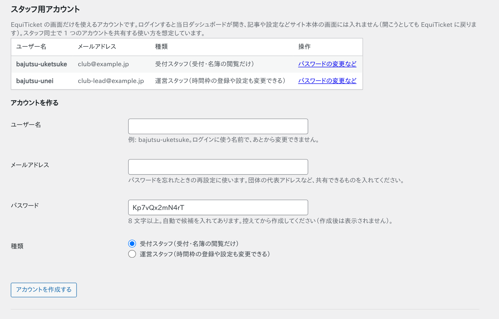
設定 → スタッフ用アカウント。作成済みのアカウントの一覧と、作成フォーム。
体験乗馬 → 設定 を開き、スタッフ用アカウント まで下がります（サイト管理者のみ作成フォームが表示されます）。ユーザー名・メールアドレス・パスワード・種類を入れて アカウントを作成する を押します。
ユーザー名 ログインに使う名前。半角英数字と - _ . @。あとから変更できない メールアドレス パスワード再設定の送り先。団体の代表アドレスなど、共有できるもの。ほかのユーザーと重複不可 パスワード 8 文字以上。候補が自動で入る。作成後は表示されないので控えておく 種類 受付スタッフ（既定）／運営スタッフ
WordPress 標準の ユーザー → 新規ユーザーを追加 で、権限グループに「体験乗馬 受付スタッフ」などを選んでも同じです。既存のユーザーに付け替えることもできます。
5-3. パスワードの変更と再設定
変更: そのアカウントでログインし、プロフィール の「新しいパスワード」から変更する。管理者は設定画面の一覧の パスワードの変更など から変更できる。
忘れた場合: ログイン画面の「パスワードをお忘れですか ?」から、登録したメールアドレスに再設定のリンクを送る。
共有アカウントのパスワードは、イベントが終わったら変更することを勧めます。
第 3 部
管理画面リファレンス
左メニュー「体験乗馬」の画面について、表示される項目と操作をすべて説明します。上の 5 つは受付スタッフも使え、下の 4 つは運営スタッフとサイト管理者だけが使えます。
当日ダッシュボード・過去の記録 — その日の状況の確認と、予約の個別操作
受付 — QR の読み取りと来場の記録
当日予約 — 予約のない方を、今日の空いている枠にその場で登録
名簿印刷 — 時間帯別の名簿の印刷と CSV 書き出し
馬の種類 — 乗れる条件と当日の支払額の登録
時間枠 — 枠の追加・編集・中止・削除・一括作成
一斉メール — 予約済みの方へのまとめての連絡
設定 — 参加条件・案内文・同意事項・デザイン・メール・アカウント・運用ツール
6 当日ダッシュボード・過去の記録今日以降の時間枠と予約を確認し、予約ごとの操作を行う画面です。スタッフ用アカウントでログインすると最初に開きます。昨日までの日は、同じ作りの「過去の記録」で見ます（6-5）。
6-1. 上部（検索・日付・操作・集計）
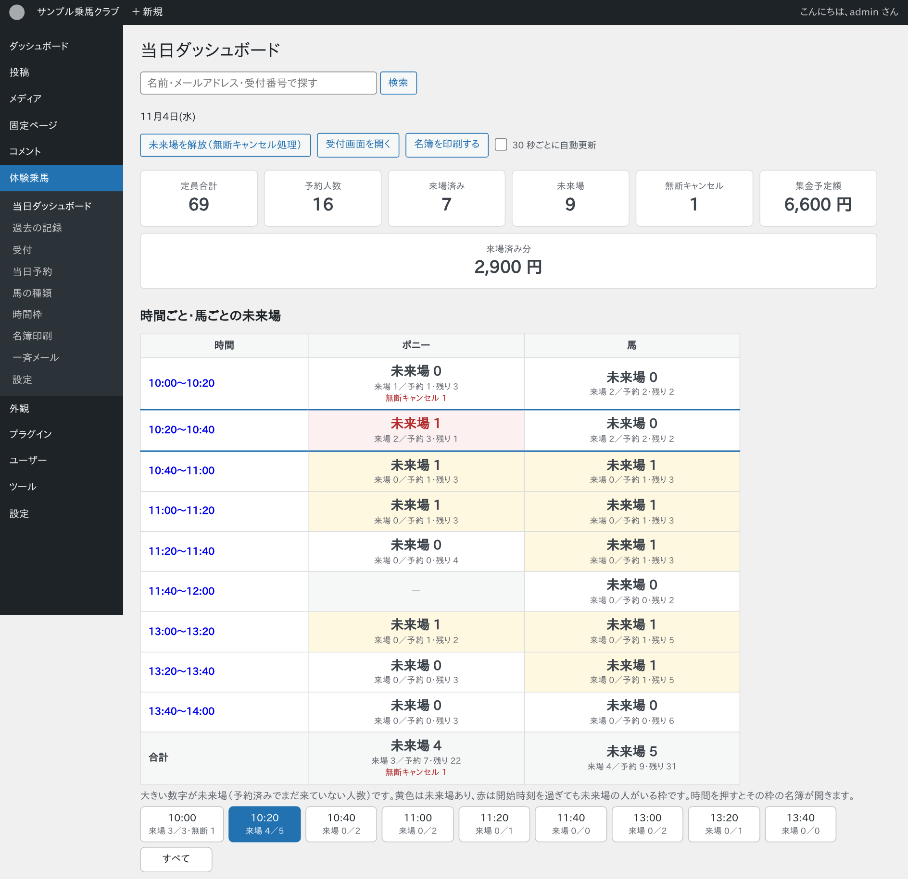
画面の上部。検索欄、日付、操作ボタン、集計、時間ごと・馬ごとの未来場の表、時間枠の切り替えボタンが並ぶ。 人を探す
見出しの下の「名前・メールアドレス・受付番号で探す」に入力して 検索 を押すと、すべての日 の予約から探して一覧にします（最大 100 件）。名前・メールアドレスは一部だけでも探せます。受付番号は「No.0012」「12」のどちらの書き方でも探せます。結果の表には「日時」の列が加わり、予約ごとの操作（6-4）もそのまま使えます。検索をやめる で元の表示に戻ります。
日付の切り替え
検索欄の下に、今日以降で時間枠が登録されている日付が並びます。開いた時点では今日の日付が選ばれています（今日に枠がなければ「この日の時間枠は登録されていません」と表示）。
操作ボタン
未来場を解放（無断キャンセル処理） 今日の 時間枠のうち、開始から「無断キャンセルの締切」（既定 10 分）を過ぎた枠の「予約済み」を「無断キャンセル」に変え、その人数を残りに戻します。自動処理と同じ内容をすぐに実行するボタンです。表示中の日付にかかわらず今日が対象で、「中止」の枠は対象外です（23-1）。受付画面を開く 「受付」画面に移動します。 名簿を印刷する 表示中の日付の「名簿印刷」画面を開きます。 30 秒ごとに自動更新 チェックすると 30 秒ごとに画面を読み込み直します。チェック状態はブラウザーごとに記憶されます。受付中に開きっぱなしにするときに使います。 最後の自動解放 無断キャンセルの解放処理が最後に動いた日時。長時間更新されていない場合は定期処理が止まっている可能性があります（4-4 を参照）。
集計
定員合計 その日の全枠の合計定員（馬の種類ごとの定員の合計）。「中止」の枠も含む 予約人数 「予約済み」と「来場済み」の人数の合計 来場済み 受付を済ませた人数 未来場 「予約済み」のまま受付していない人数 無断キャンセル 締切を過ぎて空きに戻された人数 集金予定額 「予約済み」と「来場済み」の支払額 × 人数の合計。馬の種類に支払額を登録していて、金額が 0 円でないときだけ表示（23-7） 来場済み分 「来場済み」だけの支払額 × 人数の合計。受付で受け取った現金と突き合わせる金額
6-2. 時間ごと・馬ごとの未来場
縦に時間枠、横にその日に出す馬の種類を並べた表です。どの時間のどの馬で、まだ来ていない人が何人いるかが一目で分かります。
表示 意味
未来場 N（大きい数字） その枠・その馬で「予約済み」のまま受付していない人数 来場 N／予約 N・残り N 来場済みの人数、予約人数（予約済み＋来場済み）、まだ受け付けられる人数 無断キャンセル N（赤字） 無断キャンセルになった人数。1 人以上いるときだけ表示 — その枠ではその馬を出していない 黄色のマス 未来場の人がいる（開始前） 赤いマス 開始時刻を過ぎても未来場の人がいる。遅れている方がいないか確認する。「中止」の枠には色を付けない 合計（最下行） その日の馬の種類ごとの合計
左端の時間を押すと、その枠の予約一覧（6-4）が開きます。いま開いている枠の行は青い線で囲まれます。
6-3. 時間枠の切り替え
表の下に、時間枠ごとのボタン（開始時刻と「来場 来場人数／予約人数」。無断キャンセルがあれば「・無断 N」）が並びます。押した枠の予約一覧だけが下に表示されます。開いた時点では、今の時間の枠 （まだ終わっていない最初の枠。すべて終わっていれば最後の枠）が選ばれます。すべて を押すと、その日のすべての枠の一覧を続けて表示します。
6-4. 時間枠ごとの予約一覧
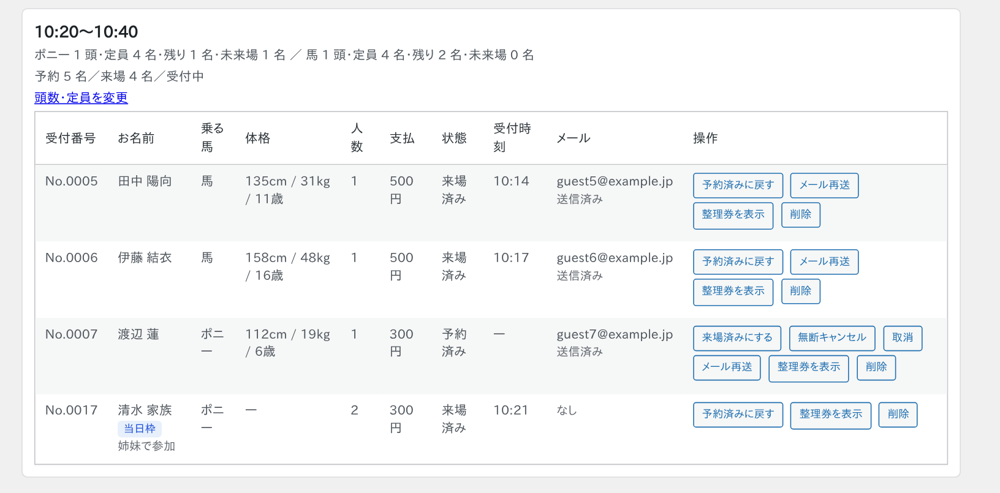
時間枠ごとのカード。上に枠の状況、下にその枠の予約の一覧が並ぶ。 カードの 1 行目は馬の種類ごとの「頭数・定員・残り・未来場」、2 行目は「予約人数／来場人数／枠の状態」です。頭数・定員を変更 を押すと、「時間枠」画面でこの枠の編集フォームが開きます（運営スタッフ以上）。
列 内容
受付番号 No.0001 形式の通し番号。来場者の整理券・確認メールにも同じ番号が載る お名前 予約者の氏名。当日予約で登録した予約には「当日枠」、写真掲載を希望しない方には「写真掲載NG」の印が付き、備考があれば下に表示。同じメールアドレスで、ほかの予約が無断キャンセルになったことがある方には「無断キャンセル歴あり（N 回）」の印が付く（すべての日の記録から数え、中止した枠の分は数えない） 乗る馬 馬の種類の名前 体格 身長 / 体重 / 年齢。当日予約は「—」 人数 Web 予約は常に 1。当日予約はまとめて登録した人数 支払 乗る馬の当日の支払額（予約した時点の金額） 状態 予約済み／来場済み／自己キャンセル／無断キャンセル（24 章を参照）。無断キャンセルの行は色付きで表示 受付時刻 来場済みにした時刻 メール 送り先と、確認メールの送信状況（送信済み／未送信）。未送信は送信に失敗したことを表す。メールアドレスのない予約（当日予約）は「なし」
予約ごとの操作
ボタン 表示される状態 動作
来場済みにする 予約済み・無断キャンセル 来場済みにし、受付時刻を記録する。無断キャンセルの予約にも使える（そのとき空きがあるかは確認しないので、先に残りを確認する） 無断キャンセル 予約済み 無断キャンセルにして、人数分を空きに戻す。締切前に「来ない」と分かったときに使う 取消 予約済み 自己キャンセル扱いにして、人数分を空きに戻す。電話などで取消の連絡があったときに使う 予約済みに戻す 来場済み・自己キャンセル・無断キャンセル 予約済みに戻し、受付時刻・取消時刻を消す。誤操作の取り消し用。定員の確認はしないので、枠が埋まっている場合は超過する。締切を過ぎた枠では、次の自動処理で再び無断キャンセルになる（23-1） メール再送 メールアドレスがある予約 確認メールをもう一度送り、送信状況を更新する 整理券を表示 すべて 来場者が見るのと同じ整理券ページを新しいタブで開く。QR をその場で見せたいときに使う 削除 すべて（運営スタッフ・サイト管理者だけに表示） 確認のあと、予約を記録ごと削除する。来場済みの予約も消せ、集計・名簿・CSV からも消える。元に戻せない。テストで入れた予約や、二重に登録した予約を消すときに使う
予約のない方の登録 カードの下の 当日予約（予約のない方を登録する）を開く から「当日予約」画面に移動します（8 章）。以前の版でダッシュボードの一番下にあった登録フォームは、この画面に移りました。
6-5. 過去の記録
体験乗馬 → 過去の記録 は、昨日までの日 を見るための画面です。来年の参考にできるよう、記録は「データの削除」（13-10）で消さない限りそのまま残ります。
開くと、記録のある最も新しい日が表示されます。日付の切り替え・検索・集計・予約一覧は当日ダッシュボードと同じです。
表の見出しは「時間ごと・馬ごとの状況」になり、色の説明は出ません。時間枠のボタンは最初の枠が選ばれた状態で開きます。
操作ボタン（未来場を解放・受付画面・名簿・自動更新）と、当日予約へのリンクはありません。
予約ごとの操作ボタンは表示されるので、終わった日の記録を誤って変えないよう注意してください。
過去の日の記録がないときは「過去の記録はまだありません。」と表示されます。
7 受付（QR チェックイン）来場者の整理券（QR）を読み取って、来場を記録する画面です。スマートフォン・タブレットでの使用を前提にしています。
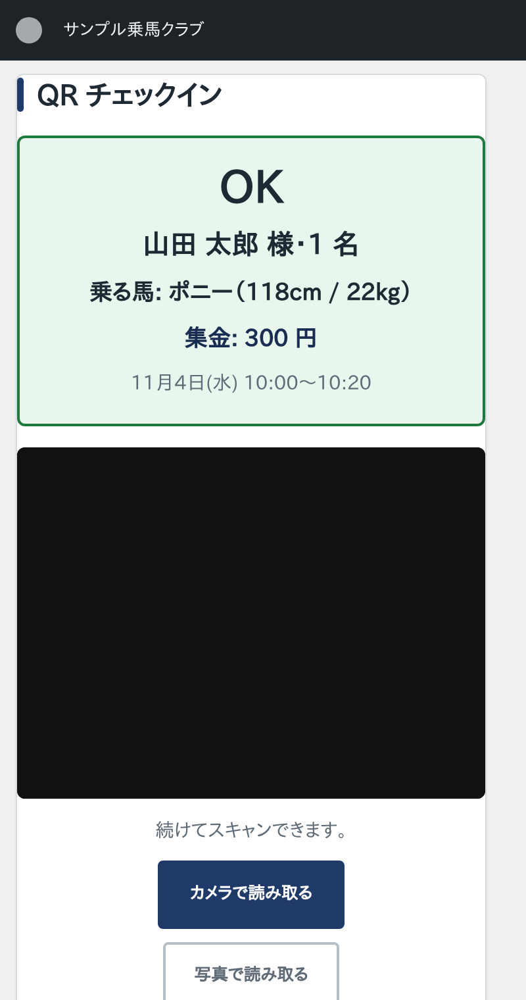
スマートフォンで開いた受付画面。
画面の構成（上から）
照合結果 直前に照合した結果。大きく表示される カメラ映像 読み取り中は白い枠（読み取り位置の目安）が出る 状態の表示 「カメラを起動しています…」「QR コードをカメラに向けてください。」など カメラで読み取る／停止 カメラの開始と停止 写真で読み取る 写真 1 枚から読み取る（7-3） カメラの状態 動かないときの手がかり（7-6） 手動照合 URL・トークンを入力して照合（7-4） 氏名で探す 今日の予約を名前で検索（7-4） 直近の受付 今日受け付けた最新 10 件
7-1. カメラで読み取る
カメラで読み取る を押します。初回はブラウザーからカメラの使用許可を求められるので許可します。映像に白い枠が出たら、QR を枠の中に、画面の半分程度の大きさで写します。
読み取ると自動で照合され、カメラ映像の上に結果が数秒間大きく表示されます（OK のときは緑の「✓ 受付しました」。Android では端末が振動します）。表示をタップすると、すぐに次の読み取りに戻ります。来場者の整理券の画面も、数秒で「✓ 受付済み」に切り替わります（15 章）。
そのまま次の QR を写せば続けて読み取れます。同じ QR を 5 秒以内に読んでも二重には照合しません。
終わったら 停止 を押します。画面を離れたときも自動で止まります。
8 秒ほど読み取れない状態が続くと、状態の表示が写し方の案内に変わります。読み取りには、ブラウザーの標準機能（BarcodeDetector）が使える端末ではそれを、使えない端末（iPhone / iPad、Windows など）では同梱のライブラリ（jsQR）を使います。どちらになったかは「カメラの状態」の「読み取り方式」で分かります。
7-2. 照合結果の種類
表示 状況 対応
OK 予約済みの整理券。来場済みにした 名前・乗る馬・集金額を確認して案内する。予約時間の前後 10 分から外れていると「予約時間は…です。時間をご確認ください。」が出る（記録はされている） 使用済み すでに来場済み 受付時刻が出る。二重受付・同じ QR の使い回しでないか確認する 時間切れ 締切を過ぎて無断キャンセルになった予約 ダッシュボードで残りを確認し、空きがあれば それでも来場済みにする で受け付ける（定員は確認されない。23-1） 取消済み 本人またはスタッフが取り消した予約 空きがあれば「当日予約」で登録する（8 章） 該当なし このシステムの整理券ではない、または予約が削除された 氏名で探す。見つからなければ「当日予約」で登録する 読み取れませんでした QR の中身が整理券の形式でない もう一度読み取るか、手動照合に切り替える
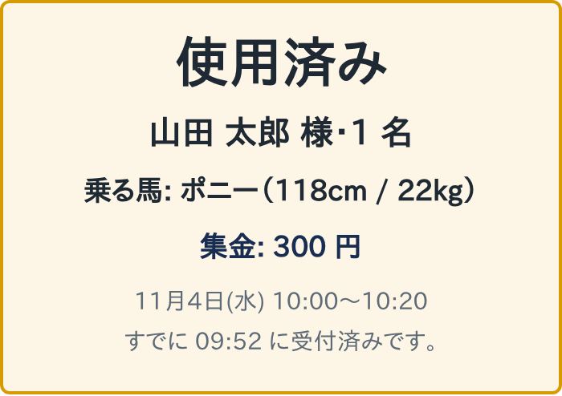
使用済み 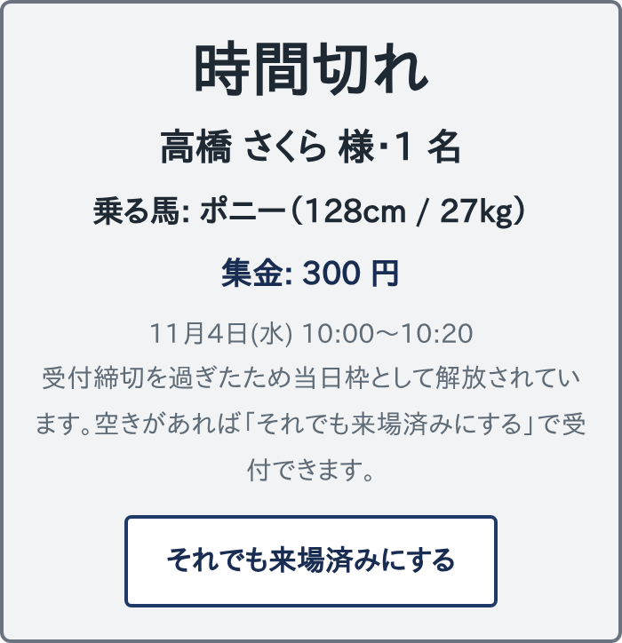
時間切れ 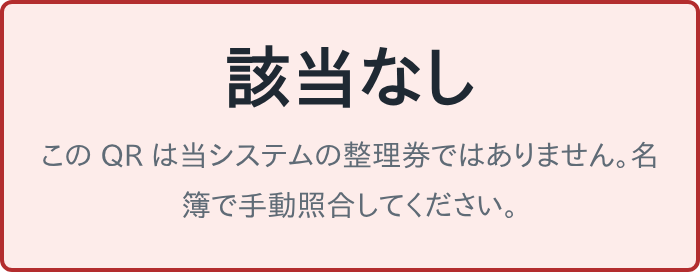
該当なし
OK のときは、名前・人数・乗る馬（体格つき）・集金額・時間枠が表示されます。当日予約で複数名をまとめた予約では「集金: 300 円 × 2 名 = 600 円」のように合計も出ます。
7-3. 写真で読み取る
カメラ映像が使えない環境（http で開いている、SNS アプリ内のブラウザー、カメラの許可が得られないなど）でも使える読み取り方法です。ボタンを押すとカメラ（または写真の選択）が開くので、QR を画面いっぱいに写して 1 枚撮ると、その写真から読み取って照合します。読み取れないときは「写真から QR を読み取れませんでした」と表示されるので、明るい場所で撮り直してください。
7-4. 手動照合・氏名で探す
手動照合 来場者の確認メールにある整理券の URL をそのまま貼り付けるか、URL の et_token= 以降（40 文字）を入力して 照合する 。結果は QR と同じ 氏名で探す 今日の 予約を、名前・メールアドレス・トークンの一部で検索する（最大 30 件）。「予約済み」「無断キャンセル」の予約には 来場済みにする が出る。通信障害のあとで、紙の名簿でチェックした分をまとめて反映するときにも使う
7-5. 直近の受付
今日来場済みにした最新 10 件が、受付時刻・名前・人数とともに表示されます。読み取りの取り違えに気づくための表示です。
7-6. カメラの状態
画面下の「カメラの状態（うまく動かないとき）」を開くと、次の値が表示されます。
項目 見かたと対処
https で表示 「なし（http:）」ならカメラは使えない。https の URL で開き直す カメラ API 「なし」ならブラウザーがカメラ機能に対応していない。SNS アプリ内のブラウザーなら Safari / Chrome で開き直す。対応していないブラウザーなら「写真で読み取る」 QR 読み取りライブラリ 「なし」なら jsqr.min.js が読み込めていない。ボタンを押した時点で読み込み直しを試みる。それでも「なし」ならプラグインのファイル不足か、最適化プラグインの JavaScript 結合を疑う（4-2） 読み取り方式 BarcodeDetector（ブラウザー標準）または jsQR（同梱） 映像サイズ 「0 × 0」のままなら映像が届いていない。再読み込み、他のアプリでカメラを使っていないかの確認、「写真で読み取る」 カメラ 使用中のカメラ名と状態（live＝動作中） 解析したフレーム数 増えていれば読み取り処理は動いている。QR の写し方（大きさ・明るさ・ピント）を見直す 最後のエラー NotAllowedError＝カメラの許可がない（iPhone は 設定 → Safari → カメラ）、NotFoundError＝カメラがない、NotReadableError＝他のアプリが使用中
8 当日予約予約なしで来場した方を、今日の空いている枠にその場で登録する画面です。スマートフォンで使う前提の作りで、受付スタッフも使えます。登録と同時に「来場済み」になります。
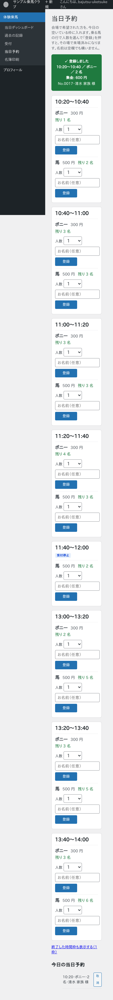
スマートフォンで開いた当日予約の画面（上部）。登録した直後は、上に緑の「✓ 登録しました」が出る。
画面の構成（上から）
登録の結果 直前に登録した内容。「時間帯／乗る馬／人数」、集金額（支払額 × 人数）、受付番号と名前を大きく表示する 時間枠ごとのカード 今日の枠を時刻順に並べる。「中止」の枠と、すでに終わった枠は出ない。「受付停止」の枠には印が付く 馬の種類ごとの行 その枠に出している馬ごとに、名前・支払額・「残り N 名」（空きがなければ「満員」）と、人数・お名前（任意）・登録 が並ぶ。定員 0 の馬は出ない 終了した時間枠も表示する 終わった枠がある場合に出るリンク（括弧内は枠の数）。遅れて来た方を終わった枠に入れるときに使う。これからの時間枠だけを表示する で元に戻る 今日の当日予約 今日この画面で登録した予約（予約済み・来場済みのもの）を新しい順に最大 15 件。間違えたときの 取消 がある
8-1. 登録の手順
体験乗馬 → 当日予約 を開きます（当日ダッシュボードの下のボタンからも開けます）。乗る方の年齢・身長・体重が、乗る馬の条件に合っているかを目で確認します（システムは体格の条件を確認しません）。
入れたい時間枠のカードで、乗る馬の行の人数 を選びます。選べるのは 1 名から「当日予約 1 件あたりの上限人数」（既定 4 名）まで、かつ残り人数までです。家族などで同じ馬にまとめて乗る場合に人数を増やします。
必要ならお名前 を入れます（空欄でも構いません）。
登録 を押します。上に「✓ 登録しました」と集金額が出たら完了です。金額を集金して案内します。
8-2. 登録される内容
項目 内容
お名前 入力した名前（50 文字以内）。空欄なら「当日受付」 乗る馬・人数 登録した行の馬と、選んだ人数 支払額 その馬の種類の当日の支払額（9 章）。集金予定額にも入る 状態 来場済み（登録した時刻が受付時刻になる） 受付経路 当日枠（ダッシュボード・名簿・CSV で「当日枠」と表示） メールアドレス・体格・備考 記録しない。確認メールも送らない。整理券が必要な場合は、当日ダッシュボードの 整理券を表示 で画面を見せる
当日予約で確認されること・されないこと 枠全体の定員と、馬の種類ごとの定員は確認されます（いっぱいなら「満員」と表示され、登録できません）。一方、予約受付の締切や「受付停止」は確認しないので、始まっている枠・受付停止の枠にも登録できます。「中止」の枠は表示されず、登録できません。
8-3. 間違えて登録したとき
画面の下の「今日の当日予約」で、該当する行の 取消 を押します。確認のあと「自己キャンセル」扱いになり、人数分の枠が空きます。正しい内容で登録し直してください。当日ダッシュボードの予約一覧からも同じ操作ができます（6-4）。
9 馬の種類体験で出す馬の種類（ポニー、馬など）を登録する画面です。来場者が入力した身長・体重・年齢が条件に合う馬だけを案内し、2 種類以上に合う場合は来場者が選びます。どの馬を何頭・何人分出すかは「時間枠」画面で枠ごとに決めます（10 章）。運営スタッフとサイト管理者が使えます。
9-1. 一覧
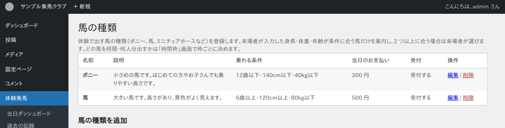
列 内容
名前 来場者の画面・整理券・メール・ダッシュボードに表示される名前 説明 来場者が時間枠と馬を選ぶ画面に表示される説明 乗れる条件 年齢・身長・体重の条件をまとめたもの（例: 12歳以下・140cm以下・40kg以下）。条件がなければ「制限なし」 当日のお支払い この馬に乗る方の当日の支払額。未登録なら「—」 受付 受付する／停止中 操作 編集 （下のフォームで編集）、削除 （9-4）
初めて有効化したときは、次の 2 種類が入っています。あとから自由に変更・追加できます。
名前 乗れる条件 当日のお支払い 表示順
ポニー 12 歳以下・身長 140cm 以下・体重 40kg 以下 300 円 10 馬 6 歳以上・身長 120cm 以上・体重 80kg 以下 500 円 20
9-2. 追加・編集
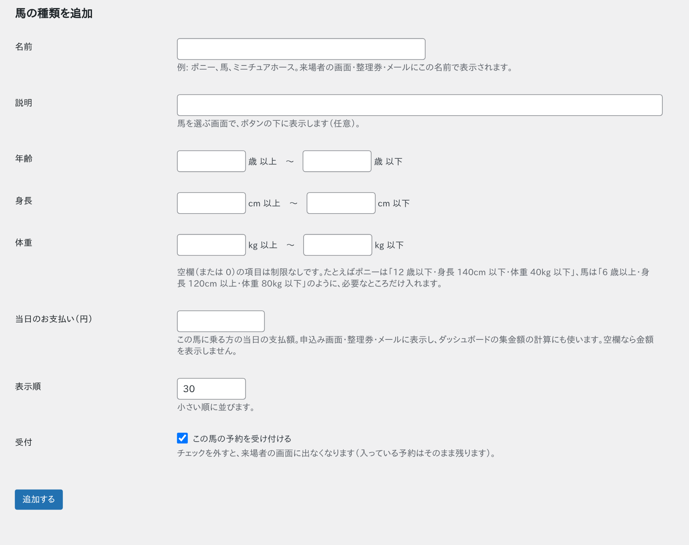
項目 範囲 内容
名前 必須・50 文字 例: ポニー、馬 説明 255 文字 馬を選ぶ画面で、名前の下に表示する（任意） 年齢 0〜120 歳 「○歳以上 〜 ○歳以下」の下限と上限 身長 0〜250cm 同じく下限と上限 体重 0〜250kg 同じく下限と上限。上限は参加できる体重の上限にも使う（9-3） 当日のお支払い（円） 0〜65535 この馬に乗る方の当日の支払額。申込み画面・整理券・メールに表示し、ダッシュボードの集金額の計算にも使う。空欄なら金額を表示しない 表示順 0〜999 小さい順に並ぶ（来場者の画面・時間枠の入力欄・ダッシュボードの表） 受付 — 「この馬の予約を受け付ける」。チェックを外すと来場者の画面に出なくなる（入っている予約はそのまま残る）
条件は、空欄（または 0）の項目は「制限なし」です。必要なところだけ入れます。下限が上限より大きいと「下限が上限より大きくなっている条件があります。」と表示され、保存されません。
9-3. 乗れる馬の決まり方
予約ページのステップ 1 で入力された身長・体重・年齢から、次の順に判定します。送信時にもサーバー側で判定し直すので、画面を書き換えても乗れない馬は予約できません。
年齢が「参加できる最低年齢」（設定、既定 5 歳。13-3）未満なら予約できません。
体重が「参加できる体重の上限」を超えると予約できません。上限は、受付中の馬の種類の「体重の上限」のうち最も大きい値です（既定では 80kg）。体重の上限がない馬が 1 つでもあれば、この確認は行いません。
受付中の馬の種類のうち、年齢・身長・体重の条件をすべて満たすものが「乗れる馬」です。ただし、今日以降の時間枠（「中止」を除く）で定員が 1 以上ある枠が 1 つもない馬は案内しません（時間枠がまったく登録されていない間は絞り込みません）。
乗れる馬が 1 種類ならその馬に決まり、2 種類以上なら来場者が時間枠と一緒に選びます。1 つもなければ予約できません。
既定の 2 種類での例 ポニーの条件 馬の条件 結果
5 歳・110cm・20kg 満たす 満たさない ポニーのみ （馬の年齢・身長に届かない）10 歳・130cm・30kg 満たす 満たす どちらか選べる 大人全般、13 歳・135cm・38kg 満たさない 満たす 馬のみ （ポニーの年齢を超える）6 歳・110cm・45kg 満たさない 満たさない 予約できない （ポニーの体重を超え、馬の身長に届かない）
判定の結果は、予約ページに「体格に合わせて、ポニーでご案内します。」「ポニーと馬のどちらでもご案内できます。乗りたい馬をお選びください。」のように表示されます（14-2）。
9-4. 削除と受付の停止
時間枠か予約で一度でも使われた馬の種類は削除できません（「この馬は時間枠か予約で使われているため削除できません。」と表示）。受付をやめる場合は「受付」のチェックを外します。
受付を停止した馬は、来場者の画面に出なくなり、時間枠の入力欄にも出なくなります（その枠ですでに使っている場合は「（受付停止中）」と表示）。
名前を変えると、すでに入っている予約の「乗る馬」の表示も新しい名前になります。支払額を変えても、すでに入っている予約の支払額は変わりません（23-7）。
10 時間枠受付の単位となる時間枠と、枠ごとに出す馬の頭数・定員を管理します。運営スタッフとサイト管理者が使えます。馬の種類は、先に「馬の種類」画面で登録しておきます（9 章）。
10-1. 一覧
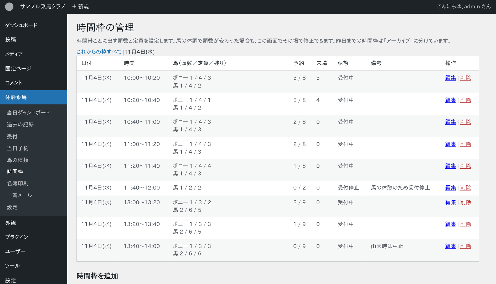
ふだんは今日以降 の時間枠だけが並びます。見出しの下の日付で絞り込めます（「これからの枠すべて」で今日以降の全日付）。昨日までの枠がある場合は 過去の時間枠（アーカイブ・N 日分）を見る が出て、アーカイブ（新しい日から順。今年以外の日は年も表示）に切り替えられます。アーカイブでは追加・一括作成のフォームは出ず、編集 を押したときだけ編集フォームが出ます。← これからの時間枠に戻る で戻ります。
列 内容
日付・時間 開催日と開始〜終了時刻 馬（頭数／定員／残り） その枠に出す馬の種類ごとに 1 行ずつ、「ポニー 1 / 4 / 3」のように頭数・定員・まだ受け付けられる人数。馬を 1 つも出していない枠は「馬が未設定」 予約 予約人数 ／ 合計定員（予約済み＋来場済み） 来場 来場済みの人数 状態 受付中／受付停止／中止（10-3） 備考 来場者の一覧にも表示される短いメモ 操作 編集 （下のフォームで編集）、削除 （10-4）
10-2. 追加・編集
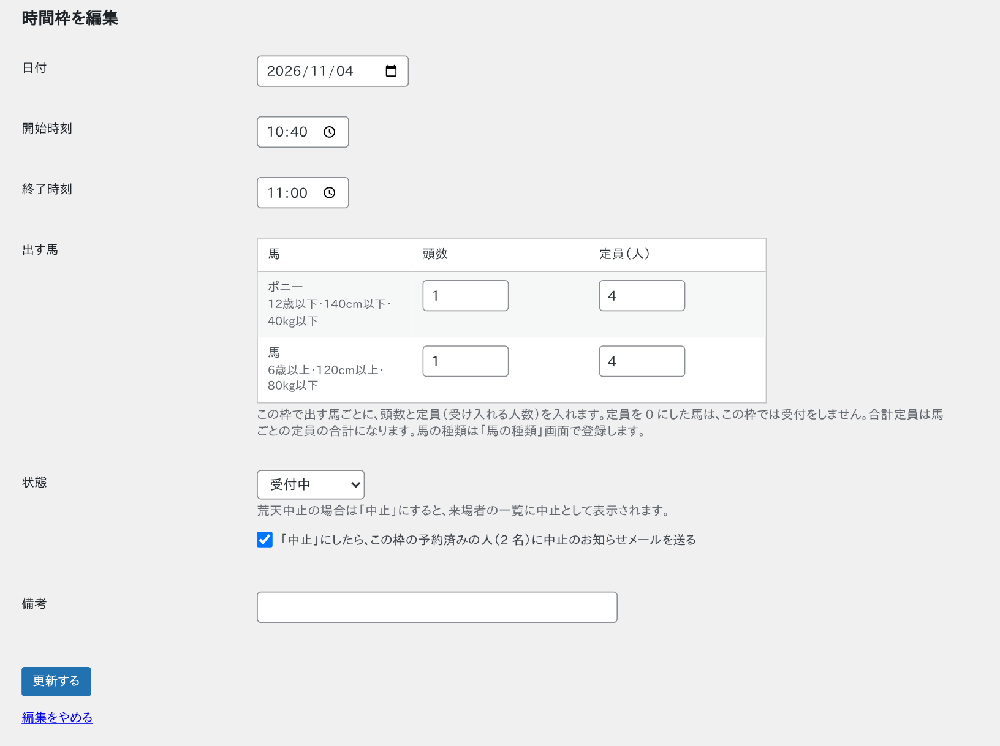
編集中のフォーム。追加のときも同じ項目が並ぶ（中止のお知らせのチェックは編集のときだけ）。
項目 範囲 内容
日付 — 開催日 開始時刻・終了時刻 終了＞開始 枠の時間帯。無断キャンセルの締切は開始時刻から、予約受付の締切は終了時刻から計算する（13-1） 出す馬：頭数 0〜50 馬の種類ごとに、その枠に出す頭数（表示用。残り人数の計算には使わない） 出す馬：定員（人） 0〜999 馬の種類ごとに、その枠で受け入れる人数。0 にした馬は、この枠では受付をしない。頭数も定員も 0 の馬は、その枠に出さない扱いになる 状態 — 受付中／受付停止／中止（10-3） 中止のお知らせ — 「「中止」にしたら、この枠の予約済みの人（N 名）に中止のお知らせメールを送る」。編集中の枠が中止でないときだけ表示され、最初からチェックが入っている（10-3） 備考 255 文字 来場者の一覧・名簿にも表示される
「出す馬」の表には、受付中の馬の種類が表示順に並び、名前の下に乗れる条件が出ます。新しく追加するときは、受付中の馬に「1 頭・定員 4 名」が最初から入っています。受付を停止した馬は、その枠ですでに使っている場合だけ「（受付停止中）」として表示されます。
合計定員は、馬の種類ごとの定員の合計で自動的に決まります。定員を減らしても、すでに入っている予約は消えません（残りは 0 と表示されます）。あふれた方には個別に案内してください。
10-3. 状態の違いと中止
状態 来場者の予約 当日予約の登録 予約済みの人の受付 来場者の一覧での表示
受付中 できる できる できる 残り人数 受付停止 できない できる できる この時間枠は受付を停止しています。 中止 できない できない できる この時間枠は中止になりました。
「受付停止」は満席扱いにしたいとき・馬を休ませたいときに、「中止」は荒天などでその枠を行わないときに使います。
中止にするときは、状態を「中止」にし、中止のお知らせのチェックを入れたまま 更新する を押します。その枠の「予約済み」の方に、設定の「中止のお知らせの件名」「中止のお知らせの本文」（13-7）で、日時・乗る馬・人数・受付番号を添えたメールが送られます。結果は画面の上に「中止のお知らせメールを N 件送りました。」と表示され、メールアドレスのない予約（当日予約など）があればその件数も出るので、会場で知らせてください。送れなかった分があれば件数が表示されます。
中止にしても、予約は自動では取り消されません（「予約済み」のまま残ります）。
中止の枠の予約は、締切を過ぎても無断キャンセルにはなりません（23-1）。無断キャンセル歴の回数にも数えません。
お知らせのチェックを外して更新した場合はメールを送りません。いったん中止にした枠をあとからお知らせだけ送ることはできないので、そのときは一斉メールではなく個別に連絡してください（一斉メールは中止の枠の予約を宛先にしません）。
10-4. 削除
「予約済み」または「来場済み」の予約が 1 件でもある枠は削除できません（「予約が入っている時間枠は削除できません。中止にする場合はステータスを「中止」に変更してください。」と表示）。行わない枠は「中止」にしてください。削除できるのは予約がない枠か、取消・無断キャンセルの予約しかない枠で、その予約も一緒に削除されます。
10-5. 一括作成
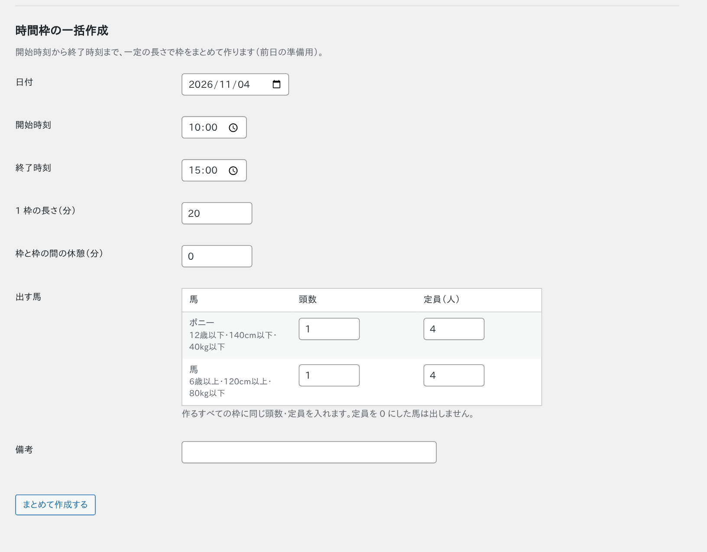
開始時刻から終了時刻まで、同じ長さの枠をまとめて作ります（前日までの準備用。初期値は 10:00〜15:00、長さ 20 分、休憩 0 分）。作った枠はあとから個別に編集できます。一度に作れるのは 200 枠までです。
項目 内容
日付・開始・終了 作る範囲 1 枠の長さ（分） 5〜240 分 枠と枠の間の休憩（分） 0〜240 分。馬の交代・水やりの時間など 出す馬 馬の種類ごとの頭数・定員。作るすべての枠に同じ値が入る（受付中の馬に 1 頭・4 名が最初から入っている）。定員を 0 にした馬は出さない 備考 作るすべての枠に同じ備考が入る
設定例 作られる枠
10:00〜12:00、長さ 20 分、休憩 0 分 10:00, 10:20, 10:40, 11:00, 11:20, 11:40 の 6 枠 10:00〜12:00、長さ 20 分、休憩 5 分 10:00, 10:25, 10:50, 11:15, 11:40 の 5 枠（最後の枠は 12:00 ちょうどに終わる） 13:00〜15:20、長さ 30 分、休憩 10 分 13:00, 13:40, 14:20 の 3 枠（15:00 からの枠は 15:20 を超えるので作らない）
終了時刻をはみ出す枠は作りません。作成すると「時間枠を N 件作成しました。」と表示されます。同じ時間帯に 2 回実行すると枠が重複して作られるので、やり直すときは先に不要な枠を削除してください。
11 名簿印刷時間帯別の予約者名簿を印刷し、CSV に書き出す画面です。通信障害に備えた紙の名簿と、終了後の記録に使います。
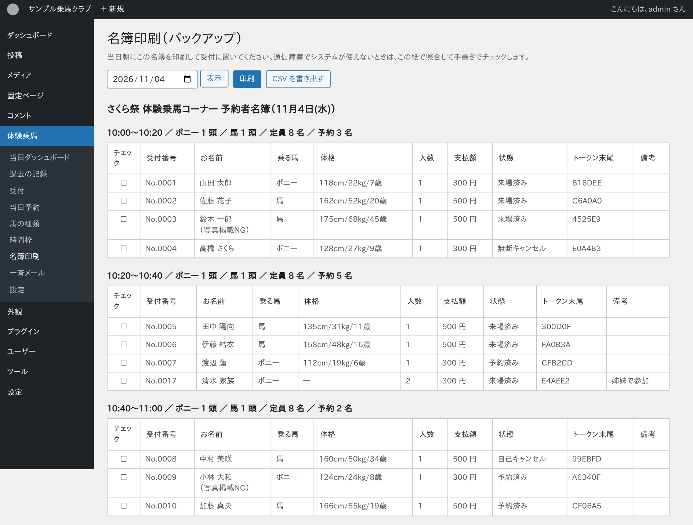
表示 日付を選んで 表示 印刷 ブラウザーの印刷を開く。印刷時は WordPress のメニューや案内文を消し、枠ごとに改ページされにくいレイアウトになる。PDF として保存することもできる CSV を書き出す その日の全予約（取消・無断キャンセルを含む）を equiticket-日付.csv で保存。Excel で文字化けしないよう BOM 付き UTF-8
名簿の列
チェック（手書き用の □）、受付番号、お名前（写真掲載を希望しない方は「写真掲載NG」）、乗る馬、体格、人数、支払額、状態、トークン末尾、備考。「トークン末尾」は整理券 URL の最後の 6 文字（大文字）で、紙で照合するときに来場者の画面の URL と見比べるのに使います。
CSV の列
受付番号、日付、開始、終了、お名前、乗る馬、身長cm、体重kg、年齢、人数、支払額、メールアドレス、状態、受付時刻、受付経路（Web 予約／当日枠）、トークン末尾、写真、備考。
12 一斉メール予約済みの方（まだ来場していない方）に、まとめてメールを送る画面です。前日に「来られなくなったら取り消してください」とお願いしておくと、無断キャンセルを減らせます。運営スタッフとサイト管理者が使えます。
12-1. 宛先を選ぶ
項目 内容
日付 「すべての日」または時間枠が登録されている日付。選ぶとすぐに絞り込まれる 時間枠 「すべての枠」または選んだ日の枠。先に日付を選んだときだけ選べる 馬 「すべての馬」または馬の種類 絞り込む 条件を反映し、「宛先: N 件」と宛先の一覧を表示する（宛先の一覧を見る で開閉。10 件以下なら最初から開いている。一覧に出るのは最初の 200 件までだが、送信はすべての宛先に行う）
宛先になるのは、状態が予約済み で、メールアドレスがある予約だけです。来場済み・自己キャンセル・無断キャンセルの予約、メールアドレスのない当日予約、「中止」の枠の予約（中止のお知らせで別に連絡するため。10-3）には送りません。
12-2. 文面を書く
最初は、無断キャンセルを減らすためのお願いの文面が入っています（件名「【{event}】ご予約のキャンセルについてのお願い（{date} {start}〜）」。本文は、取り消し方の案内と整理券の URL を含む）。主催者の言葉に書き換えて使ってください。書いた件名と本文はログインしているユーザーごとに 1 日保存され、送信後や入力ミスで戻ったときにも消えません。最初の文面に戻す で初めの文面に戻せます。
差し込み 置き換わる内容（予約ごと）
{name}予約者の名前 {date}枠の日付（例: 9月27日(日)） {start} {end}開始時刻・終了時刻 {horse}乗る馬 {people}人数 {number}受付番号（No.0012 の形式） {ticket_url}その方の整理券の URL。開くと整理券が表示され、予約を取り消す で取り消せる {event}イベント名
件名と本文の両方で使えます。設定の「メール末尾の署名」（13-7）は、本文に同じ文が書かれていなければ最後に自動で付きます。メールはテキスト形式で送ります。
12-3. 送る
自分宛てにテスト送信 を押します。宛先の 1 件目の予約の内容で差し込みをしたメールが、ログイン中の自分のアドレスに届きます（件名の先頭に「[テスト]」が付く）。届いたメールで、差し込み・改行・URL を確認します。
N 件に送信する を押し、確認のダイアログで OK を押します。送信すると取り消せません。画面の上に「一斉メールを N 件送りました。」と出ます。送れなかった分があれば件数が表示されます。
送信状況の記録 一斉メールを送っても、ダッシュボードのメール欄（確認メールの送信状況）は変わりません。宛先が多いと送信に時間がかかり、サーバーによっては 1 時間あたりの送信数に上限があります。数百件を超える場合は、日付や時間枠で分けて送ってください。
13 設定運営スタッフとサイト管理者が使えます。画面の一番上に「はじめにやること」があり、その下に次の順で設定項目が並びます。設定を保存 で「スタッフ用アカウント」より上の項目がまとめて保存されます。
はじめにやること
初期設定の手順を上から順に並べた一覧です。自動で判定できる 1〜3 には、終わっていれば緑の「済」、まだなら赤の「未」が付きます。
# 項目 「済」になる条件・内容
1 予約ページを用意する 予約ページが設定され、公開されていれば「済」。そのときは来場者用ページの URL が表示される（ポスター・チラシの QR はこの URL にする）。「未」のときは 予約ページを自動で作成する ボタンが出る（3-1） 2 乗れる馬の種類を確認する 受付中の馬の種類が 1 つ以上あれば「済」。「馬の種類」を開くリンクがある（9 章） 3 時間枠を登録する 時間枠が 1 つ以上あれば「済」。「時間枠」を開くリンクがある（10 章） 4 このページの下にある文面を確認する イベント名、料金とキャンセルの案内、同意事項、メール送信を、主催者で決めた内容に書き換えて保存する 5 テストメールを送る 運用ツールから自分宛てに送り、届くか確認する（13-10） 6 受付スタッフ用のアカウントを作る 必要な場合だけ（5 章）
一覧の下には、申込みの 4 ステップの説明と、無断キャンセルの自動解放（WP-Cron）が登録済みかどうか（登録済みなら次回の実行日時）が表示されます。
13-1. 基本設定
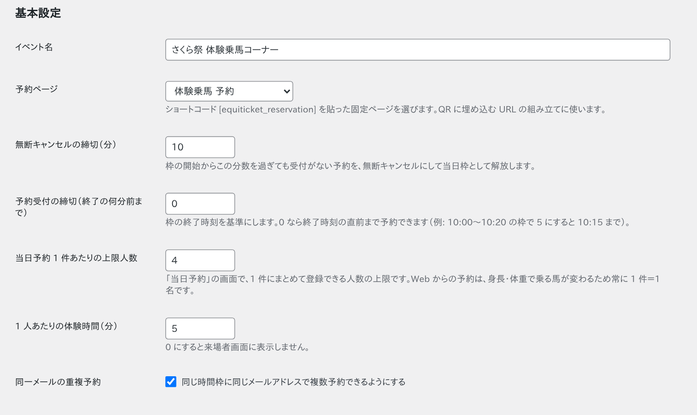
項目 既定値 内容
イベント名 体験乗馬コーナー 予約ページの見出し、確認メールの件名・本文などに使う 予約ページ 未設定 3-1 で作った固定ページ 無断キャンセルの締切（分） 10 枠の開始 からこの分数を過ぎても受付がない予約を無断キャンセルにする（0〜240） 予約受付の締切（終了の何分前まで） 0 枠の終了時刻 を基準にする。0 なら終了時刻の直前まで予約できる。10:00〜10:20 の枠で 5 にすると 10:15 まで（0〜1440）。枠が始まったあとでも、締切までは Web から予約できる 当日予約 1 件あたりの上限人数 4 「当日予約」の画面で 1 件にまとめて登録できる人数（1〜20）。Web 予約は常に 1 名 1 人あたりの体験時間（分） 0 来場者の画面に「体験時間の目安」として表示。0 なら表示しない（0〜120） 同一メールの重複予約 許可 同じ枠に同じメールアドレスで複数予約できるか。家族を 1 つのアドレスで人数分申し込めるよう、既定で許可
13-2. デザイン（サイトに合わせる）
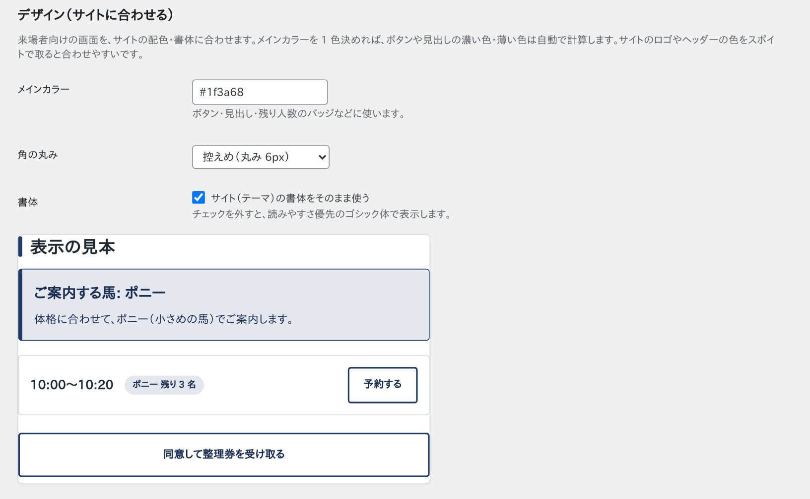
下に「表示の見本」が出るので、保存後に色と角の丸みを確認できる。
項目 既定値 内容
メインカラー #1f3a68（紺） ボタン・見出し・残り人数のバッジの色。濃い色・薄い色・ボタンの文字色（白か黒か）は明るさから自動で決まる 角の丸み 控えめ（6px） 控えめ（6px）／大きめ（12px）／角ばり（丸みなし） 書体 テーマの書体を使う チェックを外すと、読みやすさ優先のゴシック体で表示する
対象は来場者向けの画面と受付画面です。サイトのロゴやヘッダーの色をスポイトツールで取得して入力すると合わせやすくなります。
13-3. 参加条件
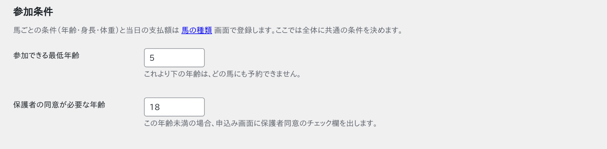
すべての馬に共通の条件です。馬の種類ごとの条件（年齢・身長・体重）と当日の支払額は「馬の種類」画面で登録します（9 章）。
項目 既定値 内容
参加できる最低年齢 5 歳 これより下の年齢は、どの馬にも予約できない（0〜120） 保護者の同意が必要な年齢 18 歳 この年齢未満なら申込み画面に保護者同意のチェック（必須）を出す（0〜30）
参加できる体重の上限は設定画面にはなく、馬の種類の「体重の上限」から自動で決まります（9-3）。
13-4. 料金とキャンセルの案内
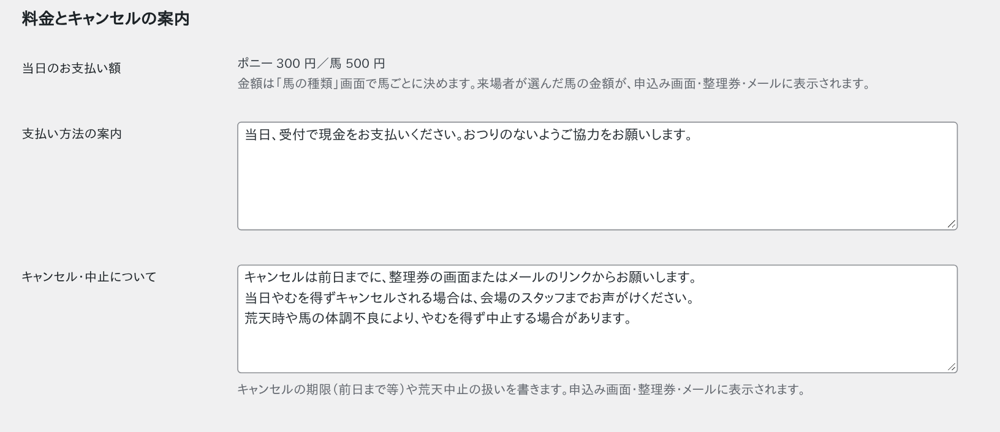
項目 内容
当日のお支払い額 表示だけの欄です。「馬の種類」に登録した支払額を「ポニー 300 円／馬 500 円」のようにまとめて表示します（どの馬も同じ金額なら金額だけ。1 つも登録がなければ「（金額が登録されていません）」）。金額は「馬の種類」画面で変えます。来場者が選んだ馬の金額が、申込み画面・整理券・メールに表示されます 支払い方法の案内 申込み画面・整理券・メールに表示する文（例: 当日、受付で現金をお支払いください） キャンセル・中止について キャンセル期限や荒天時の扱い。申込み画面・整理券・メールに表示
キャンセル期限はシステムでは制限していません 来場者は「予約済み」の間ならいつでも整理券ページから取り消せます（当日でも可）。「前日まで」などの期限は案内文としてのルールです。当日の取消で空いた枠は、予約受付の締切前であれば、そのまま他の方が予約できる状態になります（23-3）。
13-5. 同意事項
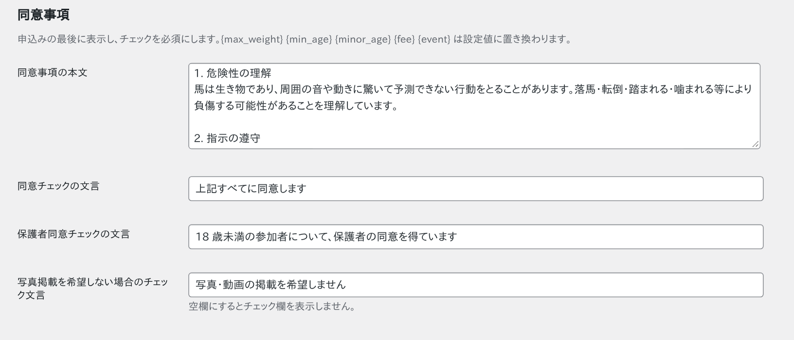
項目 内容
同意事項の本文 申込み画面の最後にスクロール枠で表示し、確認メールにも載せる。既定は 9 項目（危険性の理解、指示の遵守、服装・装備、健康状態、事故時の対応、未成年者の参加、写真・動画、キャンセル・中止、個人情報） 同意チェックの文言 既定「上記すべてに同意します」。チェックしないと申し込めない 保護者同意チェックの文言 保護者の同意が必要な年齢未満のときだけ表示し、必須にする 写真掲載を希望しない場合のチェック文言 任意のチェック。チェックした予約は名簿・ダッシュボードで「写真掲載NG」と表示。空欄にするとチェック欄を出さない
同意事項の本文と、支払い方法・キャンセル・注意事項・会場の案内文、中止のお知らせの本文では、次の差し込みが使えます（一覧は付録 A-3）: {max_weight}（参加できる体重の上限）、{min_age}（最低年齢）、{minor_age}（保護者同意が必要な年齢）、{fee}（馬の種類ごとの支払額をまとめたもの）、{event}（イベント名）。
文面の確認 第 5 項（事故時の対応）は、消費者契約法で無効になりうる「一切責任を負わない」という書き方を避けています。運用前に、主催団体の規程や加入保険（スポーツ安全保険など）の補償範囲と照らし合わせて確認してください。第 4 項の {max_weight} は、体重の上限のない馬の種類があると空になるので、その場合は文面も直してください。
13-6. その他の案内文
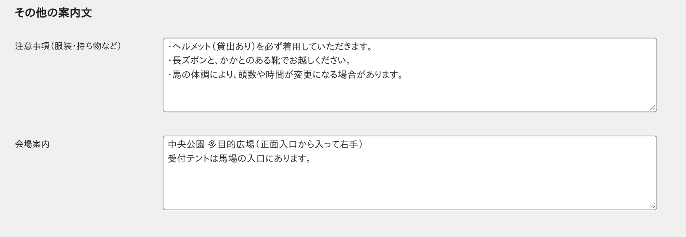
注意事項（服装・持ち物など） 予約ページの 1 ステップ目と整理券、確認メールに表示 会場案内 整理券と確認メールに表示（場所、受付テントの位置など）。空欄なら表示しない
13-7. メール送信
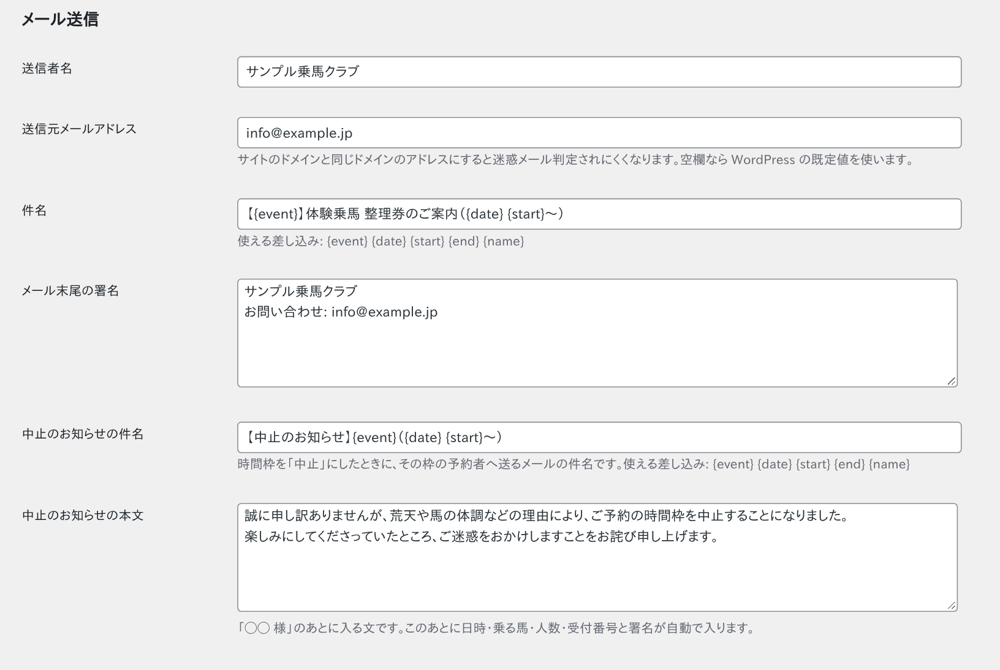
項目 内容
送信者名・送信元メールアドレス 空欄なら WordPress の既定（wordpress@ドメイン）。サイトと同じドメインのアドレスを推奨。EquiTicket が送るすべてのメールに使う 件名 確認メールの件名。既定「【{event}】体験乗馬 整理券のご案内（{date} {start}〜）」。差し込み: {event} {date}（例: 9月23日(水)） {start} {end} {name}。空欄で保存すると既定に戻る メール末尾の署名 本文の最後に付ける文（団体名、問い合わせ先など）。確認メール・中止のお知らせ・一斉メールに付く 中止のお知らせの件名 時間枠を「中止」にしたときに予約者へ送るメール（10-3）の件名。既定「【中止のお知らせ】{event}（{date} {start}〜）」。差し込みは確認メールの件名と同じ。空欄で保存すると既定に戻る 中止のお知らせの本文 「○○ 様」のあとに入る文。既定はお詫びの 2 行。このあとに中止になった枠の日時・乗る馬・人数・受付番号と署名が自動で入る
13-8. 個人情報の取り扱い
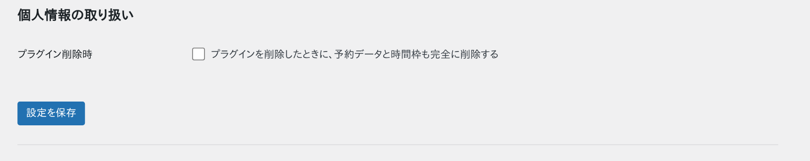
プラグイン削除時 「プラグインを削除したときに、予約データと時間枠も完全に削除する」。チェックすると、プラグインを削除したときにテーブルと設定も消す（既定はオフ＝残す）
以前の版にあった「保管期間の目安」と、運用ツールの「個人情報の削除」はなくなりました。予約の記録は、来年の参考にできるよう「過去の記録」に残ります。不要になった記録は「データの削除（リセット）」で日付を指定して消します（25-4）。
13-9. スタッフ用アカウント
5 章を参照してください。一覧はサイト管理者・運営スタッフに表示され、作成フォームはサイト管理者にだけ表示されます。
13-10. 運用ツール
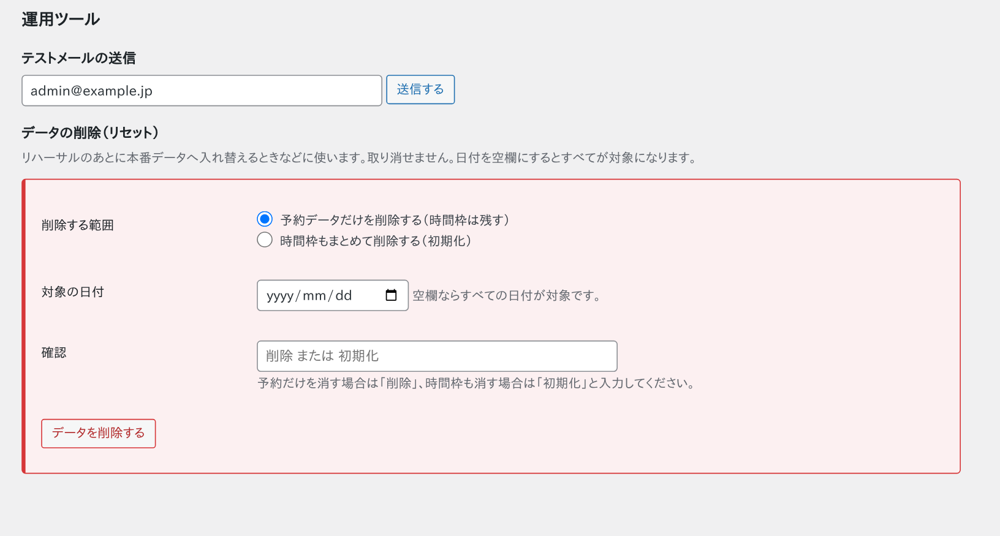
ツール 内容
テストメールの送信 入力した宛先に確認用のメールを送る（既定は自分のアドレス）。届けば確認メールも同じ経路で届く データの削除（リセット） 「予約データだけを削除する（時間枠は残す）」または「時間枠もまとめて削除する（初期化）」を選び、対象の日付（空欄ですべて）を指定する。実行には確認欄に「削除」または「初期化」と入力する必要がある。元に戻せない。リハーサルのあとに本番データへ入れ替えるときや、不要になった記録を消すときに使う
削除の前に 削除系のツールは元に戻せません。先に「名簿印刷」から CSV を保存してください。サーバーのバックアップ機能があれば、そちらも確認しておくと安心です。馬の種類と設定は、どちらを選んでも消えません。
第 4 部
来場者側の画面
来場者が予約ページで見る画面、整理券、確認メールの内容です。問い合わせに答えるときの参照用です。
14 予約の流れ予約は 4 ステップで、画面上部のステップ表示で現在位置が分かります。入力した値はステップ間で引き継がれ、最後の送信時にサーバー側で体格の判定と定員の確認をやり直します。
14-1. ステップ 1: 体格の入力
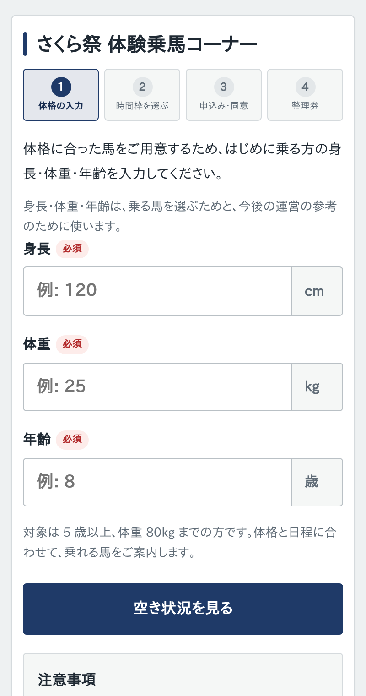
乗る方の身長（cm）・体重（kg）・年齢を入力して 空き状況を見る を押します。入力欄の下に、参加条件（例:「対象は 5 歳以上、体重 80kg までの方です。体格と日程に合わせて、乗れる馬をご案内します。」）が表示されます。
画面の下には、注意事項と「空き状況（目安）」として、今日以降の時間枠ごとに、馬の種類ごとの残り人数（満席・中止の枠はそのように）が表示されます。
入力欄の上には「身長・体重・年齢は、乗る馬を選ぶためと、今後の運営の参考のために使います。」と表示されます。
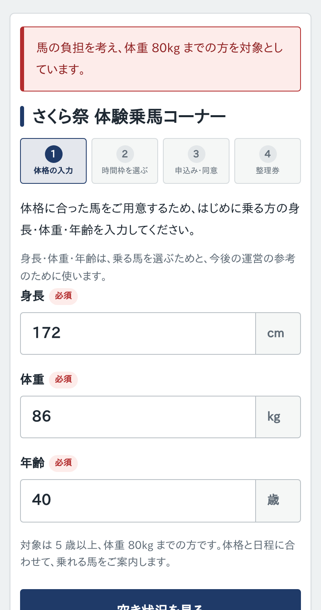
条件に合わない場合（体重の上限を超えた例）。入力値は残ったまま、理由が表示される。
ステップ 1 で表示されるメッセージ
身長・体重・年齢を数字で入力してください。 身長は 50〜250cm の範囲で入力してください。 体重は 5〜200kg の範囲で入力してください。 年齢は 0〜120 の範囲で入力してください。 安全のため、5 歳以上の方を対象としています。 馬の負担を考え、体重 80kg までの方を対象としています。 入力いただいた体格に合う馬をご用意できませんでした。当日、会場のスタッフにご相談ください。
数値は設定によって変わります。最後のメッセージは、どの馬の種類の条件にも当てはまらない場合です（9-3）。
14-2. ステップ 2: 時間枠と馬の選択
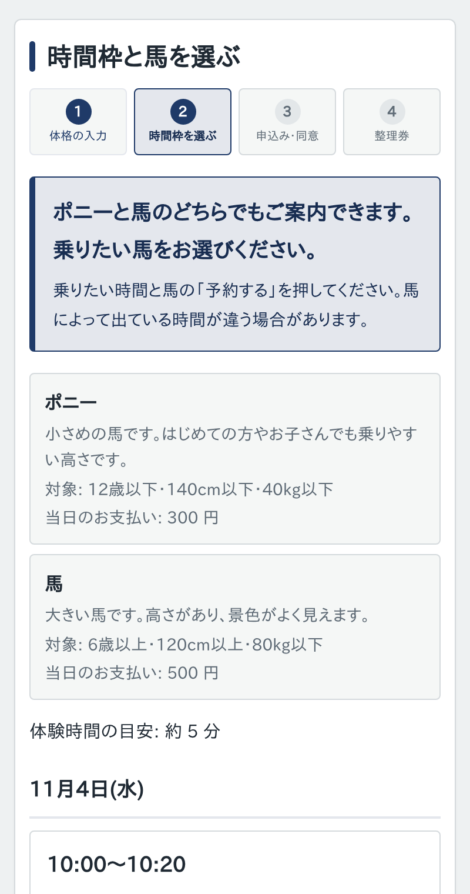
ステップ 2 の上部。判定の結果と、乗れる馬の説明が出る。その下に日付ごとの時間枠が並ぶ。
画面の上に判定の結果（例:「体格に合わせて、ポニーでご案内します。」「ポニーと馬のどちらでもご案内できます。乗りたい馬をお選びください。」）と、乗れる馬ごとの説明・対象（乗れる条件）・当日のお支払いが表示されます。「1 人あたりの体験時間」を設定していれば「体験時間の目安」も出ます。
その下に、今日以降の時間枠が日付ごとに並びます。各枠には、その方が乗れる馬のうち、その枠に出している馬ごとに 1 行ずつ、名前・支払額・「残り N 名」と 予約する が表示されます。乗りたい時間と馬の 予約する を押すとステップ 3 に進みます。乗れる馬を 1 頭も出していない枠は表示されません。
一覧は 30 秒ごとに残り人数を読み込み直し、受け付けられなくなった行のボタンは押せなくなります。
行に表示されるもの 状況
残り N 名 予約できる 満員 枠全体の定員、またはその馬の定員が埋まった（もう一方の馬は空いている場合がある） この時間枠の受付は終了しました。 終了時刻（または予約受付の締切）を過ぎた この時間枠は受付を停止しています。 状態が「受付停止」 この時間枠は中止になりました。 状態が「中止」
予約できる枠が 1 つもない場合は、「申し訳ありません。現在、ご案内できる枠が空いていません。当日の空き状況は会場でもご案内しています。」と表示されます。時間枠が 1 つもなければ「現在、受付中の時間枠はありません。」です。
14-3. ステップ 3: 申込み・同意
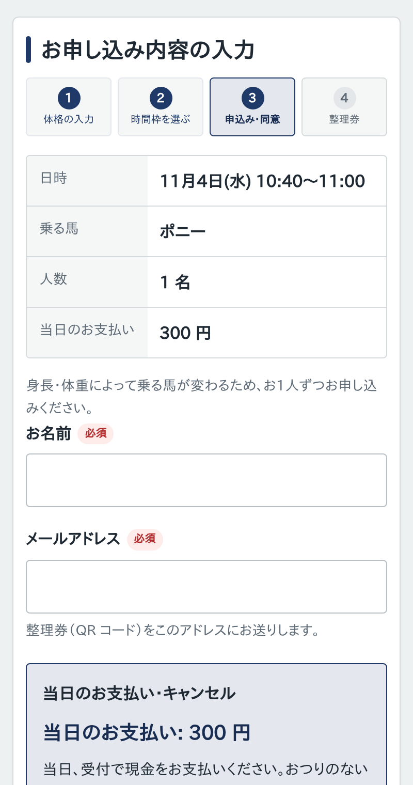
選んだ日時・乗る馬・人数・当日のお支払いの確認と、名前・メールアドレスの入力。 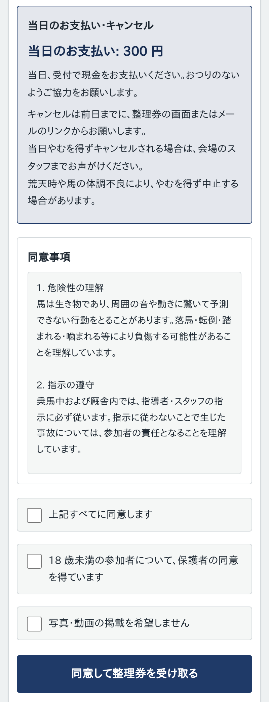
支払い・キャンセルの案内と同意事項。
お名前（50 文字以内）とメールアドレスは必須です。
当日の支払額は、選んだ馬の種類の金額が表示されます（来場者が選ぶ欄はありません）。金額が登録されていない馬では表示されません。
同意事項はスクロールできる枠に表示され、「上記すべてに同意します」のチェックが必須です。
保護者同意のチェックは、保護者の同意が必要な年齢未満の場合だけ表示され、必須です。
「写真・動画の掲載を希望しません」は任意です。
送信時に表示されるメッセージ
メッセージ 原因
申し訳ありません。ちょうど満席になりました。別の時間枠をお選びください。 入力中に他の方が予約して定員が埋まった 申し訳ありません。この時間枠の ポニー はちょうどいっぱいになりました。… 同上（その馬の定員） このメールアドレスでは、同じ時間枠の予約がすでに登録されています。… 「同一メールの重複予約」を許可していない場合に、同じ枠に同じアドレスで申し込んだ（13-1） 同意事項への同意にチェックしてください。 同意のチェックがない 18 歳未満の方は、保護者の同意の確認にチェックしてください。 保護者同意のチェックがない メールアドレスを正しく入力してください。 メールアドレスの形式が正しくない 送信内容を確認できませんでした。お手数ですが、もう一度お試しください。 ページを長時間開いたままにした、またはページがキャッシュされている（4-2） 短時間に多くの予約操作が行われました。数分おいてからもう一度お試しください。 同じ接続元から 10 分間に 30 件を超える予約があった（23-5）
15 整理券ページ
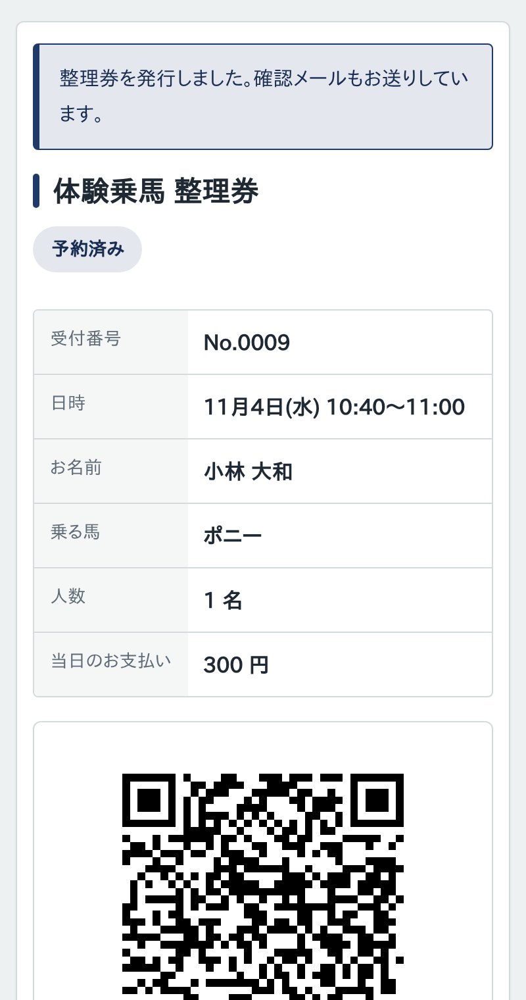
予約直後の整理券ページ。 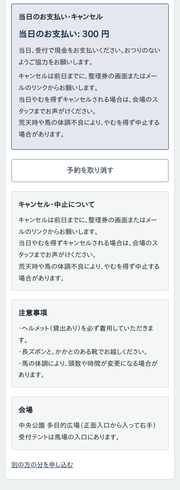
ページ下部。支払い・キャンセルの案内と、取消ボタン。
予約が完了すると整理券ページに移動し、同じ URL が確認メールでも届きます。URL を知っている人なら誰でも開けるため、来場者には他人に見せないよう案内してください。
表示 内容
受付済みの表示 「来場済み」になると、ページの一番上に大きく「✓ 受付済み」「HH:MM に受付しました」「係員の案内に従ってお進みください。」と表示される。「予約済み」の間はページが 5 秒ごとに状態を確認し、受付で QR を読み取ると数秒で自動的にこの表示に切り替わる 状態 予約済み／自己キャンセル／無断キャンセル（来場済みのときは上の表示に代わる） 明細 受付番号、日時、お名前、乗る馬、人数、当日のお支払い QR コード 「予約済み」のときだけ表示。中身は整理券の URL そのもの。画像ではなくページに直接描くので、アプリ内のブラウザーでも表示される LINE で開いたときの案内 LINE のアプリ内で開いた場合、「QR コードが表示されない場合や、あとで見返すときは、Safari・Chrome などのブラウザで開いてください。」と ブラウザで開く が出る 整理券の URL 「予約済み」のときだけ表示。QR が読めないときの手動照合用 予約を取り消す 「予約済み」のときだけ表示。押すと確認ダイアログのあと自己キャンセルになり、枠が空く 案内 支払い・キャンセル、注意事項、会場（設定した場合） 別の方の分を申し込む 予約ページの最初に戻る
予約ページが未設定の場合は、サイトのトップ URL に整理券を簡易表示します（3-1）。削除した予約の URL は「整理券が見つかりませんでした。URL をご確認ください。」となります（24-3）。
16 確認メール
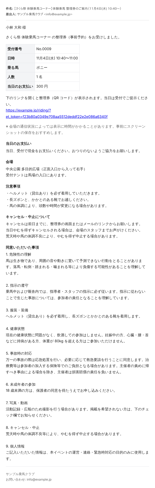
確認メールの HTML 版（同意事項の途中まで）。
送られるタイミング
来場者の予約が確定した直後に 1 通
ダッシュボードの メール再送 を押したとき
内容
宛名、受付番号・日時・乗る馬・人数・当日のお支払い、整理券の URL（開くと整理券の QR コードが表示される）、スクリーンショット保存のお願い、支払い方法、会場、注意事項、キャンセル・中止について、同意いただいた事項、署名。
メールには QR コードの画像を載せず、添付もしません。来場者には、URL を開いて整理券の画面を受付で見せてもらいます。当日予約ではメールアドレスを記録しないので、確認メールは送られません。
HTML 版とテキスト版を同時に送るので、HTML を表示しないメールソフトでも URL から整理券を開けます。
送信状況
送信に成功すると送信日時が記録され、ダッシュボードのメール欄が「送信済み」になります。失敗すると「未送信」のままになり、来場者には整理券ページで「整理券を発行しました。ただし確認メールの送信に失敗しました。この画面のスクリーンショットを保存してください。」と表示されます。
そのほかのメール
中止のお知らせ: 時間枠を「中止」にしたとき（10-3）
一斉メール: 「一斉メール」画面から送ったとき（12 章）
テストメール: 設定の運用ツールから送ったとき（13-10）
どれもテキスト形式で、送信者名・送信元アドレスは「メール送信」の設定（13-7）を使います。
第 5 部
WordPress 本体とサーバー
EquiTicket の動作に関わる WordPress 標準の管理画面と、サーバーパネル（エックスサーバー）の設定です。サイト管理者向けです。画面名は WordPress 6.x の日本語版に合わせています。
17 WordPress の設定画面左メニュー 設定 の中で、EquiTicket に影響する項目だけを挙げます。ここに載っていない項目（投稿設定・メディア設定など）は EquiTicket には関係しません。
17-1. 一般設定設定 → 一般
項目 EquiTicket との関係 推奨
サイトのタイトル テストメールの本文に入る。確認メールの差出人名には使われない（差出人名は EquiTicket の「メール送信」で設定） 団体の名前など WordPress アドレス (URL) 整理券の URL（QR の中身）はこのアドレスから作られる。http のままだとスマホのカメラが使えない。予約受付を始めたあとに変えると、送信済みのメール・QR の URL が古いアドレスのままになる https:// で始まること。受付開始後は変更しない管理者メールアドレス WordPress 本体の通知（プラグインで致命的なエラーが起きたときの「リカバリーモード」のリンクなど）の送り先。EquiTicket のメールとは無関係 当日も確認できるアドレス メンバーシップ 「だれでもユーザー登録ができるようにする」をオンにすると、誰でもアカウントを作れる オフ 新規ユーザーのデフォルト権限グループ 自己登録や新規追加時の初期値。ここを「体験乗馬 受付スタッフ」にすると、登録しただけの人が名簿を見られる 購読者 サイトの言語 WordPress 本体の画面の言語。EquiTicket の画面は常に日本語 日本語 タイムゾーン 最重要 。時間枠の開始時刻、予約受付の締切、無断キャンセルの判定、「今日」の判定、受付時刻の記録がすべてこのタイムゾーンで行われる。UTC のままだと 9 時間ずれ、開始前の予約が無断キャンセルになる「東京」または「UTC+9」 日付形式・時刻形式・週の始まり EquiTicket は独自の書式（例: 9月27日(日) 10:00）で表示するため影響なし 任意
タイムゾーンの確認方法 一般設定の「タイムゾーン」の下に表示される「現地時間は…」が、今の日本時間と一致しているか確認します。EquiTicket の当日ダッシュボードで今日の日付が開くことでも確認できます。
17-2. 表示設定設定 → 表示設定
ホームページの表示 イベント期間中だけ予約ページをサイトのトップにしたい場合は「固定ページ」→「ホームページ」に予約ページを選ぶ。整理券の URL はトップの URL＋?et_token=… になり、そのまま機能する。終了後に戻すと、送信済みの整理券 URL はトップページに簡易表示される（3-1） 検索エンジンでの表示 「検索エンジンがサイトをインデックスしないようにする」はサイト全体に効くため、通常はオフのまま。整理券の URL には EquiTicket が自動で検索除外（noindex）を付ける
17-3. パーマリンク設定設定 → パーマリンク
どの構造でも動作します。整理券の URL は予約ページの URL に ?et_token= を足したもので、構造によって次のようになります。
パーマリンク構造 整理券の URL の例
基本 https://example.jp/?page_id=12&et_token=…投稿名など https://example.jp/taiken/?et_token=…
構造や予約ページのスラッグを受付開始後に変えると、送信済みのメールの URL が新しい URL と一致しなくなります。WordPress が転送してくれる場合もありますが保証されないため、受付を始める前に確定 させてください。万一変えてしまった場合でも、受付では「氏名で探す」で照合できます。
17-4. プライバシー
設定 → プライバシー でプライバシーポリシーのページを指定できます。EquiTicket で扱う情報を、サイトのプライバシーポリシーにも記載してください。記載例:
体験乗馬の予約では、お名前、メールアドレス、身長・体重・年齢、保護者の同意の有無、写真掲載の可否をお預かりします。
これらは、乗る馬の決定、当日の受付、緊急時の対応、予約に関するご連絡、今後の運営の参考のためにのみ使用します。
保管する期間と削除の時期は主催者で決め、ポリシーにも書いてください。EquiTicket には氏名やメールアドレスだけを消す機能はないので、削除するときは「データの削除（リセット）」で日付を指定して予約データを消します（25-4）。
WordPress 標準の個人データツールは対象外 ツール → 個人データのエクスポート ／個人データの消去 は、EquiTicket の予約データを対象にしません。来場者から削除の依頼があった場合は、当日ダッシュボード（または過去の記録）の検索で該当の予約を探し、運営スタッフ以上のアカウントで 削除 します（6-4）。
17-5. ディスカッション
予約ページにコメント欄が出る場合は、固定ページの編集画面の右側 ディスカッション で「コメントを許可」をオフにします。サイト全体の 設定 → ディスカッション を変える必要はありません。
18 ユーザー左メニュー ユーザー の画面です。スタッフ用アカウントは EquiTicket の設定画面から作れますが（5 章）、変更・削除・ログアウトはこちらで行います。
18-1. ユーザー一覧
権限グループで絞り込み 一覧の上の「すべて (n) ｜ 管理者 (n) ｜ 体験乗馬 受付スタッフ (n) …」を押すと、そのロールのユーザーだけを表示する。スタッフ用アカウントの棚卸しに使う 行の操作 名前にマウスを乗せると 編集 削除 パスワードリセットを送信 が出る。「パスワードリセットを送信」は、そのユーザーのメールアドレスに再設定リンクを送る 一括操作 チェックを入れて「権限グループを変更…」でロールを選び 変更 。イベント後に受付スタッフを「権限なし」や購読者に落とすときに使う
18-2. 新規ユーザーを追加
ユーザー → 新規ユーザーを追加 。EquiTicket の作成フォーム（5-2）と同じ結果になりますが、こちらは姓・名などの項目があり、「新規ユーザーに通知を送信」にチェックすると、本人にパスワード設定用のリンクが届きます。権限グループ で「体験乗馬 受付スタッフ」または「体験乗馬 運営スタッフ」を選んでください。
18-3. ユーザーの編集
一覧から 編集 を開くと、次の項目を変更できます。
項目 EquiTicket での使い方
権限グループ ロールの付け替え。既存のスタッフのアカウント（編集者など）を受付スタッフにすると、その人は EquiTicket 以外の画面を使えなくなる点に注意。編集者のままでも受付の権限は付いている（1-2） 管理画面の配色 ユーザーごとの見た目。受付端末で見やすい配色にしてよい ツールバー 「サイトを見るときにツールバーを表示する」。EquiTicket 専用ロールのユーザーは、この設定に関係なく非表示になる メールアドレス パスワード再設定の送り先。共有アカウントは団体の代表アドレスにする 新しいパスワード 新しいパスワードを設定 で生成・入力して ユーザーを更新 セッション すべての場所からログアウト で、そのアカウントでログイン中のすべての端末をログアウトさせる。受付端末を紛失したときはこれとパスワード変更を行うアプリケーションパスワード 外部アプリ連携用。EquiTicket では使わないので作らない
共有アカウントのプロフィール 受付スタッフ・運営スタッフも自分の プロフィール を開けるため、共有アカウントのパスワードやメールアドレスを誰でも変更できてしまいます。「共有アカウントのプロフィールは変更しない」ことを部内で決めておいてください。
18-4. ユーザーの削除
投稿を持つユーザーを削除するときは、そのコンテンツをどうするか聞かれます。スタッフ用アカウントは通常投稿を持たないので、確認なしで削除されます。予約データはユーザーに結び付いていない（誰が受付したかは記録しない）ため、スタッフ用アカウントを削除しても予約・受付の記録は残ります。
19 固定ページ・プラグイン・ツール19-1. 固定ページ（予約ページ）
固定ページ → 固定ページ一覧 で予約ページを開くと、ブロックエディターの右側「ページ」タブで次を設定できます。
項目 設定と影響
ステータス 公開 にする。「非公開」「下書き」「ゴミ箱」にすると来場者は開けず、EquiTicket の画面の上部に「来場者が予約するためのページがまだありません。」と出る。その間、整理券の URL はサイトのトップに簡易表示される。「パスワード保護」は来場者がパスワードを入れれば使えるが、手間が増えるので勧めないリンク（スラッグ） 予約ページの URL。受付開始後は変えない（17-3） テンプレート テーマによっては「1 カラム」「全幅」などを選べる。サイドバーがないほうがスマホ・PC ともに入力欄が広くなる ディスカッション コメントはオフ
ショートコードは「ショートコード」ブロックのほか、段落ブロックやクラシックエディターの本文に直接書いても動作します。
ページビルダー（Elementor など）を使っている場合は、そのビルダーの「ショートコード」ウィジェットに [equiticket_reservation] を入れます。
1 つのページにショートコードは 1 回だけ置いてください。
EquiTicket を無効化すると、ページには [equiticket_reservation] という文字がそのまま表示されます。
19-2. サイトのメニューに載せる
クラシックテーマ 外観 → メニュー で、左の「固定ページ」から予約ページを追加して メニューを保存 ブロックテーマ 外観 → エディター → ナビゲーション で予約ページのリンクを追加して保存
19-3. プラグイン
操作 影響
更新 新しい ZIP を プラグインのアップロード から入れ、「現在のものをアップロードしたもので置き換える」を押す。予約データと設定は残る（2-4）。EquiTicket は WordPress.org で配布していないため、自動更新は届かない 無効化 予約・受付が止まる。データと設定は残り、再度有効化すれば元に戻る。定期処理も止まる 削除 「プラグイン削除時」の設定（13-8）がオフなら、データと設定は残る
ほかのプラグインとの組み合わせ
種類 注意点
キャッシュ・高速化 予約ページを除外。JavaScript の結合・遅延読み込みから /wp-content/plugins/equiticket/ を除外（4-2） セキュリティ（SiteGuard WP Plugin など） ログイン URL を変更している場合は、その URL をスタッフに伝える。管理画面へのアクセス制限を使う場合、admin-ajax.php（来場者の残り人数の自動更新に使う）と admin-post.php（受付・予約操作の送信先）を止めないようにする。ログイン画面の画像認証は共有アカウントでも問題ない SMTP 送信 メールが届きにくい場合に使う（4-3、20-6）。EquiTicket のメールも自動的にこの経路で送られる ロール編集（User Role Editor など） ほかのロールに EquiTicket の権限（付録 C）を付けられる。EquiTicket 専用ロールの権限を減らすと画面が開けなくなる
19-4. ツール
画面 EquiTicket との関係
サイトヘルス → ステータス 予定されたイベント（WP-Cron）の遅延やループバックリクエストに関する警告が出ていれば、定期処理が遅れている（4-4、20-7）。「HTTPS を使用していません」が出ていれば 17-1 を確認 サイトヘルス → 情報 「サーバー」で PHP のバージョン、「データベース」で MySQL / MariaDB のバージョン、「WordPress 定数」で DISABLE_WP_CRON の値を確認できる。不具合を相談するときはこの画面の「サイト情報をクリップボードにコピー」を添える エクスポート WordPress の投稿・固定ページの書き出し。EquiTicket の時間枠・予約は含まれない 。予約の記録は名簿印刷の CSV で残す 個人データのエクスポート・消去 EquiTicket のデータは対象外（17-4）
19-5. 更新のタイミング
WordPress 本体・テーマ・プラグインの更新中は、数秒〜数十秒「現在メンテナンス中のため、しばらくの間ご利用いただけません。」と表示され、予約も受付もできません。更新による不具合の可能性もあるため、イベントの前日から当日 は手動の更新を控え、更新は 1 週間以上前に済ませて動作確認してください。
20 サーバーパネル（エックスサーバー）エックスサーバーの「サーバーパネル」で確認・設定する項目です。メニューの名称はサーバーパネルの改訂で変わることがあります。ほかのサーバーでも同等の機能を探してください。
20-1. SSL
SSL設定 でドメインに無料独自 SSL を追加します（反映まで最大 1 時間程度）。反映後、WordPress の一般設定の 2 つの URL を https:// に変え（17-1）、http でアクセスされた場合に https へ転送する設定（.htaccess またはサーバーパネルの転送設定）を入れます。整理券の QR には https の URL が入るので、転送がなくても受付には影響しませんが、ポスターの QR から来る来場者のために入れておきます。
20-2. PHP のバージョン
PHP Ver.切替 でドメインごとの PHP を選びます。EquiTicket は 7.2 以上で動作しますが、推奨版（8 系）を選んでください。切り替えたら、予約ページ・当日ダッシュボード・受付画面が開くか、テスト予約ができるかを確認します。
20-3. キャッシュと高速化
機能 影響と対応
サーバーキャッシュ設定 ページの出力をサーバーで保存して配信する機能。予約ページが保存されると、フォームの有効期限切れ（「送信内容を確認できませんでした」）や古い残り人数の原因になる。予約受付の期間中はオフにするか、予約ページを対象外にできることを確認する Xアクセラレータ PHP の実行を速くする機能で、ページの内容は保存しない。オンのままでよい ブラウザキャッシュ設定 画像・CSS・JavaScript をブラウザーに保存させる機能。EquiTicket はファイルにバージョン番号を付けて読み込むため、オンのままでよい。更新直後に表示が崩れたら、端末で再読み込みする
キャッシュされていないかの確認 プライベートウィンドウで予約ページを 2 回開き、1 回目に空き状況の数字をメモ、別の端末でその枠を予約してから 2 回目を開きます（空き状況の自動更新を待たずに、ページの再読み込みで確認）。数字が減っていれば、ページはキャッシュされていません。
20-4. WAF（Web アプリケーションファイアウォール）
WAF設定 がオンだと、設定画面の保存（特に同意事項・案内文などの長い文章）で「403 Forbidden」になることがあります。その場合は WAF の該当する対策（XSS 対策・SQL 対策など）を一時的にオフにして保存し、終わったら元に戻してください。反映には数分かかります。予約・受付の操作で 403 が出た場合も、同じ手順で切り分けます。
20-5. アクセス制限
国外 IP アクセス制限 オンにすると、海外の IP アドレスから管理画面・ログイン画面に入れなくなる。VPN を使っている端末や、海外経由の通信になるサービスを使う端末ではログインできないことがある。来場者の予約ページ自体は制限されない ログイン試行回数制限 パスワードを一定回数間違えると、その IP アドレスからのログインが一時的に止まる。共有アカウントを会場の同じ Wi-Fi から複数人が間違えると、全員が締め出されることがある。パスワードは事前に端末に保存しておく
20-6. メール
メールアカウント設定 で送信元にするアドレス（例: info@example.jp）を作ります。来場者からの返信もここに届きます。EquiTicket の 設定 → メール送信 の「送信元メールアドレス」にそのアドレスを入れます（13-7）。空欄のままだと WordPress の既定（wordpress@ドメイン、差出人名「WordPress」）で送られます。
送信ドメイン認証を確認します。SPF はエックスサーバーの DNS を使っていれば既定で設定済みです。DKIM設定 を有効にし、可能なら DNSレコード設定 で DMARC レコード（例: v=DMARC1; p=none;）を追加すると、Gmail などで迷惑メールに入りにくくなります。
運用ツールの テストメールの送信 で、Gmail・iCloud・キャリアメール（docomo / au / SoftBank）に届くか確認します。
キャリアメールの受信設定 来場者の端末で迷惑メール対策（ドメイン指定受信など）をしていると届きません。予約ページの案内文に「@example.jp からのメールを受信できるようにしてください」と書いておくと問い合わせが減ります。
20-7. Cron（任意）
WP-Cron はアクセスがあったときにしか動きませんが、EquiTicket は画面表示時にも自動解放を行うので、通常は設定不要です（4-4）。確実に 5 分ごとに動かしたい場合だけ、次の 2 つを行います。
Cron設定 で、5 分ごと（分: */5、ほかは *）に次のコマンドを登録します。curl -s "https://example.jp/wp-cron.php?doing_wp_cron" > /dev/null 2>&1 アクセス時の WP-Cron を止める場合は、wp-config.php に define( 'DISABLE_WP_CRON', true ); を追加します（1 を確認してから）。
20-8. バックアップ
エックスサーバーは Web とデータベースを自動でバックアップしており、バックアップ から過去の時点に復元できます（保存期間はプランの仕様を確認）。ただし復元はその時点以降の予約がすべて消える ため、当日の誤操作の取り消しには使わず、画面上の操作（24 章）で戻してください。
データの削除（リセット）を行う前や、イベント終了後の記録として残したい場合は、名簿の CSV に加えて、phpMyAdmin で wp_equiticket_time_slots と wp_equiticket_reservations をエクスポートしておくと確実です（接頭辞はサイトによって異なる）。
20-9. ログ
画面が真っ白になる、「このサイトで重大なエラーが発生しました」と出る場合は、ログ → エラーログ で PHP のエラーを確認します。同時に、管理者メールアドレス（17-1）にリカバリーモードのリンクが届いていないか確認してください。
第 6 部
運用とトラブル対応
準備から当日、終了後までの進め方と、自動処理・数字の決まり方、予約の状態の移り変わり、よくあるトラブルへの対処をまとめます。
21 当日の進め方21-1. 準備のチェックリスト
✓ 時期 内容 参照
□ 2 週間前まで WordPress のタイムゾーン・https・パーマリンクを確認し、WordPress 本体・テーマ・プラグインの更新を済ませる 17、19-5 □ 2 週間前まで 馬の種類（乗れる条件・支払額）と、参加条件・同意事項・案内文を確定して設定する（同意事項は顧問・保険の内容と照らし合わせる） 9、13-3〜13-7 □ 2 週間前まで 送信元アドレスを設定し、テストメールが Gmail・iCloud・キャリアメールに届くことを確認する 13-7、20-6 □ 2 週間前まで 時間枠を作る（一括作成）。馬の種類ごとの頭数・定員・備考を確認する 10 □ 受付開始前 リハーサル: 自分のスマホで予約 → メール受信 → 受付画面で読み取り → ダッシュボードで確認 → 予約済みに戻す／取消。ポニーのみ・両方・馬のみの 3 通りの体格で試す 14、7 □ 受付開始前 リハーサルのデータを「予約データだけを削除する」で消す（数件ならダッシュボードの 削除 でもよい） 13-10、6-4 □ 受付開始前 予約ページの URL の QR をポスター・SNS に載せる 3-2 □ 前日 スタッフ用アカウントで各受付端末にログインし、パスワードを端末に保存。受付画面をホーム画面に追加し、カメラの許可を済ませる 5、7-1 □ 前日 一斉メールで、予約済みの方に「来られなくなったら取り消してください」とお願いする 12 □ 前日 名簿を印刷する（通信障害時の控え）。前日夜の時点のものでよい 11 □ 前日 受付端末の充電・モバイルバッテリー、つり銭、ヘルメットの数を確認する —
21-2. 開場前（30 分前）
当日ダッシュボードを開き、今日の日付が表示されていること、予約数が前日から大きくずれていないことを確認します。
馬の体調を見て、頭数・定員を変える枠があれば変更します（21-4）。
各受付端末で受付画面を開き、カメラで読み取る → 自分の整理券（リハーサル用に 1 件残すか、ダッシュボードの 整理券を表示 を別端末に表示）を読んで動作を確認します。確認に使った予約は 予約済みに戻す で戻します。
名簿の最新版が必要なら、この時点で印刷し直します。
21-3. 受付の手順
来場者に整理券（画面・スクリーンショット・メール）を出してもらい、受付画面で QR を読み取ります。
結果が OK なら、表示された名前・乗る馬・集金額を来場者に確認し、集金します。「予約時間は…です」と出た場合は、時間を確認して案内します（記録はされています）。
OK 以外の表示は 7-2 の表に従って対応します。判断に迷う場合は責任者に回し、列を止めないようにします。
予約のない方は、空きがあれば 体験乗馬 → 当日予約 で登録します（8 章）。
役割分担の例 受付係（QR の読み取りと集金。1 端末 1 人）、当日予約係（「当日予約」を開いた端末で飛び込みの方の登録、ダッシュボードで遅刻の方の対応）、責任者（運営スタッフのアカウントで頭数・定員・枠の状態を変更）。受付係は受付スタッフのアカウントで足ります。
21-4. 当日の枠の調整
状況 操作 既存の予約への影響
馬が 1 頭休む その枠のその馬の頭数と定員を減らす（ダッシュボードの 頭数・定員を変更 ） 取り消されない。定員を予約人数より少なくすると残り 0 になり、新しい予約が止まるだけ。超過分の方への対応は現場で判断する 予約を一時的に止めたい 状態を「受付停止」にする 影響なし。受付（QR）と当日予約の登録はできる 空きを増やす 定員を増やす 保存した時点から来場者の画面の残り人数が増える（一覧は 30 秒以内に更新） 荒天でその枠を行わない 状態を「中止」にし、中止のお知らせのチェックを入れたまま更新する（10-3） 予約は自動では取り消されないが、メールアドレスのある予約済みの方には中止のお知らせメールが届く。メールのない予約（当日予約など）や、メールを見ていない方のために、SNS・掲示でも案内する（整理券ページに中止の表示はない）。中止の枠の予約は無断キャンセルにならず、「予約済み」のまま残る（23-1）
21-5. 終了時
最後の枠の開始から「無断キャンセルの締切」を過ぎたら、ダッシュボードで 未来場を解放（無断キャンセル処理） を押し、時間ごと・馬ごとの未来場の表で、「中止」の枠を除いて未来場が 0 になったことを確認します（自動処理は当日の枠しか対象にしないため、当日中に行う）。
ダッシュボードの「来場済み分」と、手元の現金を突き合わせます（23-7）。
名簿印刷から CSV を書き出して保存します。
22 障害時の対応22-1. 会場の通信が不安定
受付端末は会場の Wi-Fi とモバイル回線を切り替えて試します。テザリング用の端末を 1 台用意しておくと安心です。
通信できない間は、紙の名簿 で受付します。来場者の画面の整理券 URL の末尾 6 文字と、名簿の「トークン末尾」を見比べ、□ に印を付けます。
通信が戻ったら、印を付けた方を当日ダッシュボードの 来場済みにする 、または受付画面の「氏名で探す」で記録します。受付時刻は記録した時刻になります。
22-2. 受付端末で QR が読めない
次の順に切り替えます。どの方法でも記録される内容は同じです。
写真で読み取る （7-3）。暗い・反射する場合は来場者の画面の明るさを上げてもらう。別の受付端末で読む。
「氏名で探す」（7-4）で名前の一部を入れて探し、来場済みにする 。
来場者の画面の URL を「手動照合」に入力する（7-4）。
カメラが起動しない原因の切り分けは 7-6「カメラの状態」を参照してください。
22-3. サイトが表示されない
表示 原因と対応
現在メンテナンス中のため… 更新の途中。通常は 1 分以内に戻る。10 分以上続く場合は、サーバーの WordPress のフォルダにある .maintenance ファイルを削除する このサイトで重大なエラーが発生しました プラグイン・テーマの不具合。管理者メールアドレスに届くリカバリーモードのリンクからログインし、原因のプラグインを無効化する。エラーログも確認する（20-9） 503 / 500 エラー サーバーの負荷・障害。エックスサーバーの障害情報を確認する。復旧まで紙の名簿で受付する 403 Forbidden WAF・アクセス制限（20-4、20-5）
22-4. 来場者に確認メールが届かない
迷惑メールフォルダを確認してもらいます。
当日ダッシュボードの検索欄（名前・メールアドレス・受付番号）でその予約を探し、メール欄のアドレスが正しいか、「送信済み」かを確認します。
アドレスが正しければ メール再送 を押します。
アドレスが間違っている場合、EquiTicket には予約のメールアドレスを変更する画面はありません。受付は氏名で照合できるので、そのまま来場してもらいます。整理券が必要な場合は、その予約を 取消 し、正しいアドレスで予約し直してもらいます。
22-5. 誤操作をした
誤操作 戻し方
別の人を来場済みにした ダッシュボードで 予約済みに戻す 。受付時刻は消える 取消・無断キャンセルにした 予約済みに戻す 。定員は確認されないので、その間に埋まっていると定員を超える締切後の枠で予約済みに戻した 直後の自動処理で「無断キャンセル」に戻る（23-1）。来場している方なら 来場済みにする を使う 当日予約を間違えて登録した 「当日予約」画面の「今日の当日予約」で 取消 し、登録し直す（8-3） 時間枠の頭数・定員を間違えた 時間枠を編集し直す。予約には影響しない 中止のお知らせを送らずに中止にした あとからお知らせだけを送る機能はない。予約済みの方に個別に連絡する（10-3） 予約の削除・データの削除を実行した 画面からは戻せない。サーバーのバックアップから復元するしかなく、その時点以降のデータは失われる（20-8）
23 自動処理と数字の決まり方画面の数字や自動で起きる状態の変化が、どの規則で決まるかをまとめます。問い合わせや「数字が合わない」ときの確認に使ってください。
23-1. 無断キャンセル（自動解放）
対象 今日 の時間枠のうち、「開始時刻＋無断キャンセルの締切（既定 10 分）」を過ぎた枠の、予約済み の予約。受付中・受付停止の枠が対象で、「中止」の枠は対象外 （来なくて当然なので、予約済みのまま残す）処理 状態を「無断キャンセル」にし、その時刻を記録する。人数は残り人数に戻る 実行のきっかけ (1) WP-Cron で 5 分ごと、(2) 予約ページ・空き状況の自動更新・当日ダッシュボード・過去の記録・当日予約の表示時（1 分に 1 回まで）、(3) ダッシュボードの 未来場を解放（無断キャンセル処理） メール 来場者には送られない
例: 10:00〜10:20 の枠、締切 10 分なら、10:10 以降の最初の実行で、その枠の未来場の予約が無断キャンセルになります。
解放された席の使われ方 来場者の Web 予約は枠の終了時刻 （から予約受付の締切を引いた時刻）まで受け付けるため（23-3）、解放された席は、枠の途中でも Web から予約できます。会場で希望された方には、スタッフが「当日予約」（8 章）で入れます。受付・ダッシュボードの「時間切れ」「当日枠として解放」という表示はこの意味です。
遅れて来た方を受け付けると定員を超えることがある 「時間切れ」の整理券を それでも来場済みにする （またはダッシュボードの 来場済みにする ）で受け付けるとき、定員は確認されません。解放後に Web 予約や当日予約で席が埋まっていると、定員を超えて記録されます。受け付ける前にダッシュボードでその枠の残りを確認してください。
23-2. 残り人数
残り人数は保存された値ではなく、表示のたびに予約から計算します。数えるのは予約済み と来場済み の人数で、自己キャンセル・無断キャンセルは数えません。頭数は計算に使いません。
合計定員 その枠に出す馬の種類ごとの定員の合計（自動） 枠全体の残り 合計定員 − 枠全体の予約人数（0 未満は 0） 馬の種類ごとの残り 「その馬の定員 − その馬の予約人数」と「枠全体の残り」の少ないほう
例: 馬の定員 4・ポニーの定員 4（合計 8）の枠に、馬 4 名・ポニー 1 名の予約 → 馬の残り 0、ポニーの残り 3、枠全体の残り 3。
定員を超えて記録されるのは、定員を予約人数より少なく変更したとき、予約済みに戻す 、それでも来場済みにする のときだけです。その場合も残りは 0 と表示されます（マイナスにはならない）。ダッシュボードの「時間ごと・馬ごとの未来場」の表、当日予約の画面、来場者の画面に出る「残り」は、どれもこの値です。
23-3. 予約できる条件
条件 Web 予約 当日予約（スタッフ）
枠の状態が受付中 必要 中止でなければよい 終了時刻 − 予約受付の締切 より前 必要 不要 枠全体の残りが足りる 必要 必要 乗る馬の残りが足りる 必要 必要 体格が参加条件・馬の種類の条件に合う 必要 不要（スタッフが判断） 人数 常に 1 名 1〜上限人数 同意・保護者同意・メールアドレス 必要 不要（記録しない） 連続送信の制限（23-5） 対象 対象外
来場者による取り消し は、状態が「予約済み」である限りいつでもできます。「キャンセルは前日まで」は案内文であり、システムでは制限していません。当日に取り消された席は、予約受付の締切前（既定では枠の終了時刻の前）なら Web から再び予約できます。
23-4. 同時に申し込まれたとき
予約の確定時には、その時間枠の行をデータベースでロックしてから残り人数を数え、保存します。同じ枠への申込みが同時に届いても 1 件ずつ順番に処理されるため、定員を超えることはありません。あとから処理された方には「ちょうど満席になりました」と表示されます。念のため、保存後にもう一度人数を数え、超えていればその予約を取り消します（トランザクションが効かないデータベース向けの保険）。
一覧の残り人数は 30 秒ごとに更新される目安で、予約できるかどうかは送信した時点の判定がすべてです。
23-5. 連続送信の制限
いたずらや機械的な大量予約を防ぐため、同じ接続元（IP アドレス）からの Web 予約の送信を数え、30 件 に達するとそれ以降の送信を断ります。数えるのは入力内容のチェックを通った送信で（満席で断られたものも含む）、最後に数えた送信から 10 分たつとリセットされます。
会場の Wi-Fi や同じ回線からの申込みは同じ接続元になります。会場で大勢が一斉に予約すると制限に当たることがあるため、会場ではモバイル回線での予約を案内するか、「当日予約」で登録してください。
CDN やリバースプロキシを経由する構成では、すべての来場者が同じ接続元に見えることがあります。その構成で使う場合は事前に相談してください。
23-6. メールの送信状況
「送信済み」は、WordPress がメールを送信処理に渡せたことを表し、相手に届いたことまでは保証しません。送信処理でエラーになった場合は「未送信」のまま残ります。当日予約はメールアドレスを記録しないので「なし」と表示されます。一斉メール・中止のお知らせの送信は、この欄には記録されません。
23-7. 集金額
集金予定額 予約済み＋来場済みの予約の「支払額 × 人数」の合計。集金予定額と来場済み分がどちらも 0 円の日は、ダッシュボードに表示しない 来場済み分 来場済みの予約だけの「支払額 × 人数」の合計。受付で受け取った現金と一致するはずの金額
支払額は、乗る馬の種類に登録した金額（9 章）が予約した時点 で記録されます。あとから「馬の種類」の金額を変えても、既存の予約の金額は変わりません。
当日予約の支払額も、登録した行の馬の金額です。乗る馬を選び間違えると金額もずれます。
現金と合わない場合は、CSV の「支払額」「状態」で来場済みの行を確認します。支払額が空欄の行は、金額を登録していない馬の予約です。
23-8. 時刻
すべての時刻は WordPress のタイムゾーン（17-1）で扱います。受付時刻・取消時刻もサーバーの時計ではなく、このタイムゾーンで記録されます。
24 予約の状態24-1. 4 つの状態
状態 定員に数える 整理券の QR 来場者の取消 受付で読んだとき
予約済み ○ 表示 できる OK（来場済みになる） 来場済み ○ 非表示（「✓ 受付済み」を表示） できない 使用済み 自己キャンセル × 非表示 — 取消済み 無断キャンセル × 非表示 — 時間切れ（それでも来場済みにできる）
スタッフがダッシュボードや当日予約の画面で 取消 を押した場合も「自己キャンセル」として記録され、本人による取消かスタッフによる取消かは区別されません。区別が必要な場合は紙の名簿に控えてください。
24-2. 状態の移り変わり
元の状態 変わった先 きっかけ
予約済み 来場済み 受付で QR を読む／手動照合／氏名で探す／ダッシュボードの 来場済みにする 自己キャンセル 来場者が整理券ページで取り消す／ダッシュボード・当日予約の 取消 無断キャンセル 自動処理（23-1。中止の枠は除く）／ダッシュボードの 無断キャンセル 来場済み 予約済み 予約済みに戻す （受付時刻は消える）自己キャンセル 予約済み 予約済みに戻す （定員は確認しない）無断キャンセル 来場済み それでも来場済みにする ／来場済みにする （定員は確認しない）予約済み 予約済みに戻す 。締切後の枠では次の自動処理で無断キャンセルに戻るすべての状態 （なくなる） ダッシュボードの 削除 （運営スタッフ以上）、運用ツールのデータの削除
当日予約で登録した予約は、最初から「来場済み」になります。
24-3. 予約を削除したとき
ダッシュボードの 削除 （6-4）や、運用ツールの「データの削除」（13-10）で消した予約は、記録ごとなくなります。集計・名簿・CSV・過去の記録からも消え、整理券の URL は「整理券が見つかりませんでした。URL をご確認ください。」、受付では「該当なし」になります。元に戻すことはできません。
25 イベント終了後25-1. 当日中
21-5 の手順（未来場の解放、集金の突き合わせ、CSV の保存）を行います。
25-2. 振り返りに使える数字
来場率 来場済み ÷（来場済み ＋ 無断キャンセル）。中止した枠の予約は無断キャンセルにならず「予約済み」のまま残るので、計算には入らない 当日予約の割合 CSV の「受付経路」が「当日枠」の行 馬の種類ごとの比率 CSV の「乗る馬」。「過去の記録」の時間ごと・馬ごとの状況の表でも見られる 体格の分布 CSV の身長・体重・年齢（来年の馬の種類の条件の見直しに使う。データの削除の前に集計しておく）
25-3. 予約ページを閉じる
終了後も予約ページはそのまま表示され、時間枠がなければ「現在、受付中の時間枠はありません。」と出ます。ショートコードの上に「今年の受付は終了しました」などの文を追加しておくと親切です。ショートコードを外すと、送信済みの整理券 URL も表示されなくなります。
25-4. 記録の保管と削除
予約の記録は、来年の参考にできるよう、消さない限り「過去の記録」（6-5）と時間枠のアーカイブ（10-1）に残ります。氏名やメールアドレスだけを消す機能はありません。保管期間を過ぎて不要になったら、次の手順で日付ごとに消します。
名簿印刷から CSV を保存し、振り返りの集計を済ませます。
設定 → 運用ツール → データの削除（リセット） で、「予約データだけを削除する（時間枠は残す）」または「時間枠もまとめて削除する（初期化）」を選び、対象の日付を指定し、確認欄に「削除」または「初期化」と入力して実行します（日付を空欄にするとすべての日が対象になるので注意）。保存した CSV にも個人情報が含まれるため、保管場所と削除時期を決めておきます。
25-5. アカウントと次回への準備
共有アカウントのパスワードを変更し、不要なスタッフ用アカウントは削除するか権限を外します（18 章）。
次回も同じ設定で使う場合は、時間枠と予約を「時間枠もまとめて削除する（初期化）」で消しても、設定と馬の種類はそのまま残ります。記録を残したまま次回の時間枠を作ることもできます（今日以降の枠だけが一覧・ダッシュボードに並ぶ）。
26 トラブルシューティング症状から原因と対処を引けるようにまとめます。表の「参照」で詳しい説明の場所を示します。
26-1. 来場者からの問い合わせ
症状 原因と対処 参照
確認メールが届かない 迷惑メール・受信拒否設定。ダッシュボードの検索で予約を探し、送信状況を確認して再送する。整理券 URL がなくても氏名で受付できる 22-4 整理券を開くと「見つかりませんでした」 URL が途中で切れている（メールアプリでの改行など）。または予約が削除された。受付は氏名で照合する 24-3 「送信内容を確認できませんでした」 ページを長時間開いたまま送信した、またはページがキャッシュされている。ページを再読み込みして最初からやり直してもらう。多発する場合はキャッシュを確認 4-2、20-3 「短時間に多くの予約操作が…」 同じ回線から 30 件を超えた。10 分待つか、モバイル回線で予約してもらう 23-5 「ちょうど満席になりました」 入力中に他の方が予約した。別の枠を選んでもらう 23-4 体格の条件に合わないと言われた 参加条件と馬の種類の条件どおりの判定。当日の判断で乗れる場合は「当日予約」で登録する 9-3、8 乗りたい馬が選べない 体格がその馬の条件に合わない、その馬の受付が停止中、または今日以降にその馬を出す時間枠がない（定員 0） 9-3、10-2 中止のお知らせが届いた。振替はできるか 中止の枠の予約は自動では取り消されない。別の枠を希望される場合は、Web で予約し直してもらうか、当日「当日予約」で登録する 10-3 家族の分をまとめて予約したい Web は 1 件 1 名。同じメールアドレスで人数分申し込んでもらう（同一メールの重複予約が「許可」の場合） 13-1 予約を取り消したい（当日） 整理券ページの 予約を取り消す で取り消せる。会場で申し出られた場合はダッシュボードの検索で探して 取消 23-3 予約の時間を変えたい 変更機能はない。取り消して取り直してもらう（空きがある場合） — 名前・メールアドレスを間違えた 変更機能はない。受付は氏名の一部で探せる。整理券が必要なら取り直してもらう 22-4
26-2. 受付で
症状 原因と対処 参照
カメラが起動しない https でない、ブラウザーのカメラ許可が拒否、ほかのアプリがカメラを使用中。「カメラの状態」を開いて確認する 7-6 カメラは映るが読み取らない 画面の反射・暗さ・距離。枠いっぱいに映す。だめなら写真で読み取る 22-2 「QR 読み取りライブラリ: なし」 最適化プラグインが JavaScript を結合している、またはファイル不足。除外設定を確認する 4-2 「使用済み」と出る すでに受付済み。受付時刻を確認し、二重受付か同じ QR の使い回しかを判断する 7-2 「時間切れ」と出る 締切を過ぎて無断キャンセルになった。残りを確認して受け付ける 23-1 「該当なし」と出る ほかのサイトの QR、または予約が削除された。氏名で探す 7-4 受付用に作った固定ページにボタンしか出ない 受付は管理画面の 体験乗馬 → 受付 に一本化された。ページの 受付画面を開く から移動する（ブックマークは管理画面の受付に変える） A-1 当日予約で枠が出ない 今日の枠がない、すべて終了している（「終了した時間枠も表示する」を押す）、または「中止」の枠 8 ログインできない パスワード違い、ログイン試行回数制限、国外 IP アクセス制限、ログイン URL の変更 20-5、19-3 突然ログイン画面に戻される ログインの有効期限切れ、または誰かが「すべての場所からログアウト」を実行した。ログインし直す 18-3
26-3. 管理画面で
症状 原因と対処 参照
「来場者が予約するためのページがまだありません。」 設定の「予約ページ」が未選択、または予約ページが公開状態でない。お知らせの 予約ページを自動で作成する で作れる（運営スタッフのアカウントではページを公開する権限がなく作れないので、サイト管理者が押す） 3-1、19-1 今日なのに別の日が開く／時刻がずれる WordPress のタイムゾーンが UTC のまま 17-1 開始前なのに無断キャンセルになった 同上。または枠の日付・開始時刻の入力ミス 17-1、10-2 未来場が減らない WP-Cron が遅れている。未来場を解放 を押す。過去の日付の枠と「中止」の枠は自動処理の対象外 23-1 時間枠が削除できない 予約済み・来場済みの予約がある。「中止」にする 10-4 一括作成で枠が思ったより少ない 終了時刻を超える枠は作られない。終了時刻は最後の枠の終わりの時刻を入れる 10-5 設定を保存すると 403 WAF 20-4 馬の種類・時間枠・一斉メール・設定の画面がメニューにない 受付スタッフのアカウントでログインしている 1-2 昨日の予約がダッシュボードに出ない 当日ダッシュボードは今日以降の日だけを表示する。「過去の記録」で見る 6-5 予約の 削除 ボタンがない 受付スタッフのアカウントでは表示されない 6-4 メニューに「体験乗馬」しか出ない EquiTicket 専用ロールの仕様。WordPress の画面を使う場合は管理者でログインする 5-1 CSV が文字化けする BOM 付き UTF-8 で出力しているので、Excel ではそのまま開ける。古い Excel や別のソフトで化ける場合は、「データ」→「テキストまたは CSV から」などで文字コードに UTF-8 を指定して読み込む 11 集金額が現金と合わない 支払額は予約時点の金額。当日予約での乗る馬の選び間違い、受付漏れ（来場済みになっていない）を CSV で確認する 23-7
26-4. メール
症状 原因と対処 参照
テストメールが届かない 送信元アドレスがサイトと別ドメイン、送信ドメイン認証の不足。SMTP 送信プラグインを検討する 4-3、20-6 差出人が「WordPress」になる 送信元の名前・アドレスが未設定 13-7 メールに QR コードがない 確認メールには QR の画像を載せていない。本文の URL を開くと整理券（QR）が表示される 16 一斉メールの宛先が 0 件 条件に合う「予約済み」でメールアドレスのある予約がない。来場済み・取消・中止の枠の予約、当日予約は宛先にならない 12-1 メールの案内文に {fee} などがそのまま出る 差し込みの綴り違い（半角の波かっこ・小文字）。使える差し込みは付録 A-3 A-3
付録
資料
差し込み・URL・既定値・権限・データの一覧です。
A ショートコード・URL・差し込みA-1. ショートコード
ショートコード 表示されるもの
[equiticket_reservation]予約ページ（4 ステップの申込み）。URL に et_token が付いているときは整理券を表示する。属性はない [equiticket_checkin]受付画面への案内だけを表示する。受付の権限があるユーザーには「受付は管理画面の「体験乗馬 → 受付」で行います。」と 受付画面を開く 、それ以外の人には「受付画面はスタッフ用です。ログインしてからご利用ください。」と ログイン （ログイン後は管理画面の受付が開く）。以前の版ではこのページでも受付ができたが、受付の画面が 2 つあると迷いやすいため、管理画面の受付に一本化された。新しく使う必要はない。属性はない
A-2. 画面の URL
https://example.jp の部分はサイトの URL に読み替えてください。ブックマークやホーム画面への追加に使えます。
画面 URL
ログイン https://example.jp/wp-login.php（セキュリティ系プラグインで変更している場合はその URL）当日ダッシュボード https://example.jp/wp-admin/admin.php?page=equiticket-dashboard 日付・枠を指定 上の URL の末尾に &date=2026-09-27（今日以降の日）。&slot=all ですべての枠 過去の記録 https://example.jp/wp-admin/admin.php?page=equiticket-records受付 https://example.jp/wp-admin/admin.php?page=equiticket-checkin当日予約 https://example.jp/wp-admin/admin.php?page=equiticket-walkin馬の種類 https://example.jp/wp-admin/admin.php?page=equiticket-horses時間枠 https://example.jp/wp-admin/admin.php?page=equiticket-slots（アーカイブは末尾に &archive=1）名簿印刷 https://example.jp/wp-admin/admin.php?page=equiticket-roster一斉メール https://example.jp/wp-admin/admin.php?page=equiticket-mail設定 https://example.jp/wp-admin/admin.php?page=equiticket-settings整理券 予約ページの URL ＋ ?et_token=（40 文字の英数字）。取消の直後は &et_msg=cancelled が付く
A-3. 差し込み
波かっこは半角、名前は小文字で書きます。対応していない場所に書いた差し込みは、そのままの文字で表示されます。
差し込み 置き換わる内容 使える場所
{max_weight}参加できる体重の上限（受付中の馬の種類の体重の上限のうち最大。例: 80）。上限のない馬があれば空 同意事項の本文、支払い方法の案内、キャンセル・中止について、注意事項、会場案内（画面・メールとも）、中止のお知らせの本文 {min_age}参加できる最低年齢（例: 5） {minor_age}保護者の同意が必要な年齢（例: 18） {fee}馬の種類ごとの支払額をまとめたもの（例: ポニー 300 円／馬 500 円） {event}イベント名 {event}イベント名 確認メールの件名、中止のお知らせの件名 {date}枠の日付（例: 9月27日(日)） {start}開始時刻（例: 10:00） {end}終了時刻（例: 10:20） {name}予約者の名前 上の 5 つと{horse} {people}{number} {ticket_url} 乗る馬、人数、受付番号、整理券の URL（12-2） 一斉メールの件名・本文
同意チェック・保護者同意・写真掲載の文言と、メール末尾の署名には差し込みは使えません。一斉メールでは {max_weight} などの設定値の差し込みは使えません。
B 既定値一覧有効化した直後の設定値と、入力できる範囲です。範囲外の数値は保存時に範囲内へ丸められます。
区分 項目 既定値 範囲
基本設定 イベント名 体験乗馬コーナー — 予約ページ 未設定 — 無断キャンセルの締切（分） 10 0〜240 予約受付の締切（終了の何分前まで） 0 0〜1440 当日予約 1 件あたりの上限人数 4 1〜20 1 人あたりの体験時間（分） 0（表示しない） 0〜120 同一メールの重複予約 許可 — デザイン メインカラー #1f3a68 — 角の丸み 控えめ（6px） — 書体 テーマの書体を使う — 参加条件 参加できる最低年齢 5 歳 0〜120 保護者の同意が必要な年齢 18 歳 0〜30 来場者の入力の範囲: 身長 50〜250cm、体重 5〜200kg、年齢 0〜120 料金 支払い方法の案内 当日、受付で現金をお支払いください。おつりのないようご協力をお願いします。 — キャンセル・中止について キャンセルは前日までに…（3 行） — 同意事項 同意事項の本文 9 項目（13-5） — 同意チェックの文言 上記すべてに同意します — 保護者同意チェックの文言 18 歳未満の参加者について、保護者の同意を得ています — 写真掲載を希望しない場合のチェック文言 写真・動画の掲載を希望しません — 案内文 注意事項 ヘルメット・服装・頭数変更の 3 行 — 会場案内 空欄 — メール 送信者名・送信元メールアドレス 空欄（WordPress の既定） — 件名 【{event}】体験乗馬 整理券のご案内（{date} {start}〜） 空欄なら既定に戻る メール末尾の署名 空欄 — 中止のお知らせの件名 【中止のお知らせ】{event}（{date} {start}〜） 空欄なら既定に戻る 中止のお知らせの本文 誠に申し訳ありませんが、荒天や馬の体調などの理由により…（2 行） — 個人情報 プラグイン削除時にデータも削除 オフ（残す） —
馬の種類（初期）
名前 乗れる条件 支払額 表示順
ポニー 12 歳以下・身長 140cm 以下・体重 40kg 以下 300 円 10 馬 6 歳以上・身長 120cm 以上・体重 80kg 以下 500 円 20
新しくインストールしたときだけ登録されます。入力できる範囲は、年齢 0〜120、身長・体重 0〜250（0 は制限なし）、支払額 0〜65535 円、表示順 0〜999 です。
設定画面にない固定値
Web 予約の人数 1 件 1 名 お名前の長さ 50 文字以内（当日予約で空欄なら「当日受付」） 連続送信の制限 同じ接続元から 30 件。最後の送信から 10 分でリセット（23-5） 自動解放の間隔 WP-Cron で 5 分ごと。画面表示時は 1 分に 1 回まで（23-1） 空き状況の自動更新 30 秒ごと 整理券の受付済みの確認 予約済みの整理券ページで 5 秒ごと 受付で時間外とみなす幅 枠の開始 10 分前より前、終了 10 分後より後（記録はする） 整理券のトークン 40 文字（乱数 20 バイトの 16 進表記） 一括作成で一度に作れる枠 200 枠まで 時間枠の頭数・定員 馬の種類ごとに頭数 0〜50、定員 0〜999。新しい枠の初期値は受付中の馬に 1 頭・4 名 ダッシュボードの検索 すべての日から最大 100 件 当日予約の「今日の当日予約」 新しい順に 15 件 一斉メールの宛先の一覧 最初の 200 件を表示（送信はすべての宛先）
C 権限とデータロール編集プラグインで権限を調整する場合や、データベースを直接確認する場合の参考です。
C-1. 権限（capability）とロール
権限 できること
equiticket_checkin当日ダッシュボード・過去の記録（予約の操作）、受付、当日予約、名簿印刷・CSV equiticket_manage馬の種類、時間枠、一斉メール、設定（運用ツールを含む）、予約の削除 create_users（WordPress 標準）設定画面でのスタッフ用アカウントの作成 publish_pages（WordPress 標準）予約ページを自動で作成する （equiticket_manage と両方が必要）
ロール（スラッグ） 権限
体験乗馬 受付スタッフequiticket_staff read、equiticket_checkin体験乗馬 運営スタッフequiticket_manager read、equiticket_checkin、equiticket_manage管理者 administrator 有効化時に両方を追加 編集者 editor 有効化時に equiticket_checkin を追加
管理画面の制限（5-1）は、EquiTicket の権限を持ち、かつ WordPress の manage_options・edit_posts・edit_pages・upload_files・list_users のいずれも持たないユーザーにかかります。投稿を書ける編集者・投稿者などには制限はかかりません。
C-2. データベース
テーブル名の wp_ はサイトの接頭辞です。
テーブル 主な列
wp_equiticket_time_slotsevent_date 日付、start_time end_time 時刻、capacity 合計定員（馬ごとの定員の合計）、status（open 受付中／closed 受付停止／cancelled 中止）、note 備考。古い版から更新したサイトには、使われなくなった馬・ポニーの頭数・定員の列が残っていることがあるwp_equiticket_horsesname 名前、description 説明、min_age max_age min_height max_height min_weight max_weight 条件（0 は制限なし）、fee_amount 支払額、sort_order 表示順、active 受付するwp_equiticket_slot_horsesslot_id 時間枠、horse_id 馬の種類、horse_count 頭数、capacity 定員wp_equiticket_reservationsslot_id 時間枠、name email、people_count 人数、horse_id 乗る馬、horse_name 予約時の馬の名前（馬の種類が削除されたときの表示用）、height_cm weight_kg age、fee_amount fee_label 支払額、guardian_consent 保護者同意、photo_optout 写真掲載 NG、qr_token トークン、status（reserved／checked_in／cancelled／no_show）、source（web／staff）、note、created_at checked_in_at cancelled_at mail_sent_at
受付番号（No.0001）は予約の id です。
C-3. WordPress に保存するもの
equiticket_settings設定値すべて（オプション） equiticket_db_versionテーブル構成の版（現在 7）。更新時の自動移行に使う equiticket_last_sweep自動解放の最終実行時刻（ダッシュボードの「最後の自動解放」） equiticket_sweepWP-Cron のイベント名（間隔 equiticket_five_minutes） 一時データ（transient） equiticket_throttle_… 連続送信の回数、equiticket_sweep_lock 画面表示時の自動解放の間隔、equiticket_notices_… 管理画面のお知らせ、equiticket_checkin_result_… 受付結果の表示、equiticket_bulk_mail_draft_… 一斉メールの書きかけ（1 日）
C-4. 開発者向けのフック
equiticket_reservation_created予約が確定した直後（Web 予約・当日予約とも）。引数: 予約、時間枠 equiticket_reservation_checked_in来場済みにした直後（当日予約の登録時を含む）。引数: 予約
テーマの functions.php や独自プラグインから add_action() で処理を追加できます（例: 予約があったら運営チームのチャットに通知する）。